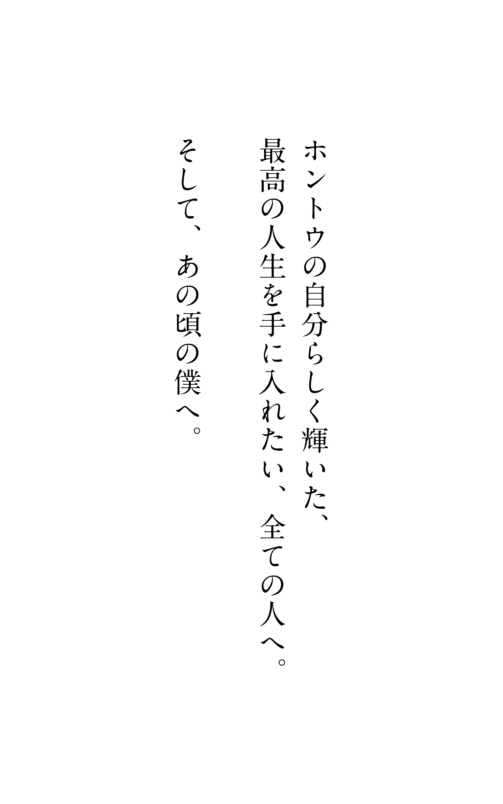
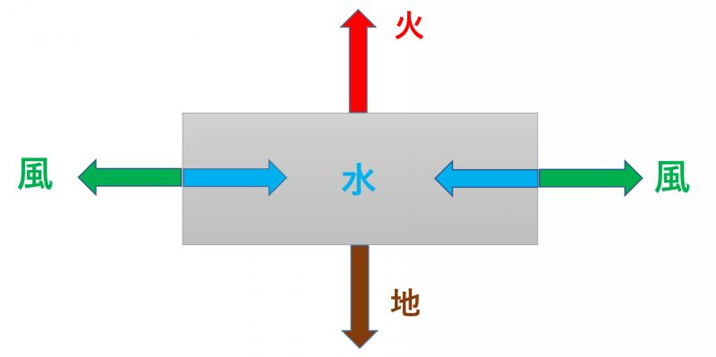
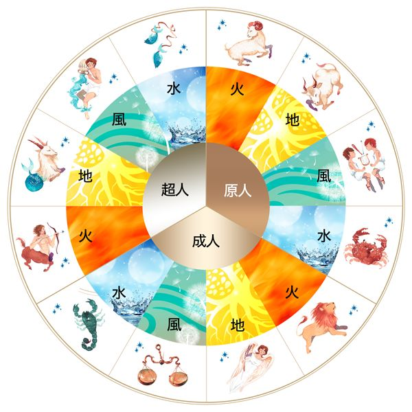
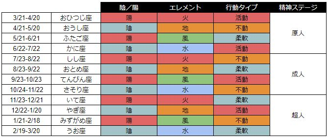
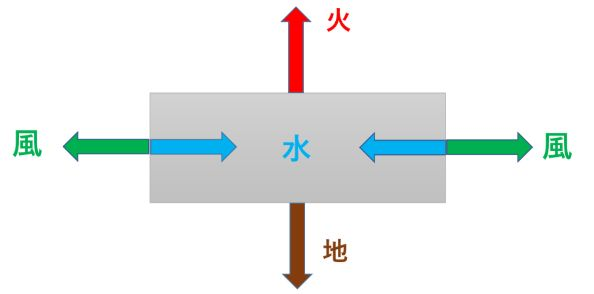

| Mr.エレメント: あなたの「天才」、かなえます | |
| 岩瀬 晃 | |
| 岩瀬晃 (2018) | |

「自分は何のために生きているんだろう」
そんなことを考えることもなく、ただなんとなく生きてきた気がする。
まるで人生が、永遠に流れ続ける川であるかのように。
まるで人生が、自分には到底動かせない山であるかのように。
とりあえずお金欲しいから、アルバイトして
とりあえず楽しいから、ポテチ食べながらゲームして
とりあえず親が喜ぶから、良い高校、良い大学に入って
とりあえず親が苦しむから、できるだけお金はかけないようにして
ずっと、そんな生き方をしてきた。
そして、それでそれなりにうまくいっていた。
それが、こんな思いもよらない出来事で
根底からひっくり返ることになるなんて......。
＊ ＊ ＊ ＊ ＊
就職活動は、大学３年の終わりからスタートする。
僕は、それなりに名の知れた大学にラッキーにも入ることができたから、さすがにどっかの会社には就職できるだろうと、タカをくくっていた。
あわよくば、親も喜ぶような大きな会社で、給料も良い会社に入れたら最高だなーなんて思ってた。
ところが。
周りの仲間たちがどんどん就職先を決めていく中、僕だけが、一向に合格できない。
最初は、『まぁ、そんなこともあるよな』って強がっていたけど、さすがに10 社くらい連続で落ち続けると、さすがに今まで味わったことがないような不安に襲われ始めた。
「いやいや、このままどこにも就職できないなんてことはさすがにないよな?? 』という淡い期待が、採用試験に落ちていくたびに、さらに薄れていった。
そして、７月。
大手の会社による採用活動はほとんど終わり、事実上、僕が行ける会社はなくなっていた。
そう、正式に僕は、『留年』が決まってしまったのだ。
僕は、その非情な現実を受け入れられずにいた。
「なんで、頑張っていい大学に入ったのに、後はいい会社に入るだけだっていうのに、ここでこんな仕打ちを受けなきゃいけないんだよ......」
自分のダラしなさが招いた結果であることは棚に上げて、僕は悔しさと、情けなさと、先が見えない怖さとで、完全に思考停止状態になっていた。
でも、少なくとも親には事実を伝えなきゃいけない。
僕は、重い口を開け、まるで刑が確定した罪人が裁判官に頭を下げるかのように、父と母にこう告げた。
「留年させてください」
人生初の挫折であり、屈辱だった。
「はぁー留年かぁー」
大学の最寄り駅近くにある居酒屋でいつものようにバイトを終えた後、帰りの電車の中で、僕はまだ、このまったく想定していなかった事実を受け入れられずにいた。
「でも、新卒で就職できなかったのに、留年してから就職なんてできるワケがないよなぁ......」
バイトとマージャンとポテチとビデオゲームの繰り返しで完全にアホになっていた僕の頭でも、さすがにそのくらいのことは理解できた。
「はぁ......どうしたらいいんだろう、俺......」
人生における全ての判断を、『常識』と『世間体』と『親』にゆだねてきた僕は、この想定外の状況に対して、全く打つ手を思いつける気がしなかった。
電車を降りた僕は、いつものバス停に向かった。
もう時間は夜０時。最終バスだ。
まもなくやってきたバスの中は人もまばらで、僕はいつものように一番後ろの席に座った。
その時、ふと横に目をやると、座席の上に、チケットのようなものがあるのが目に入った。
「ん、なんのチケットだろう？」
手を伸ばして取ってみたら、明らかに怪しい雰囲気の紫色やらピンクやら黄色やらの柄に、こんなことが書いてあった。
"あなたは、『ホントウのあなた』を生きていますか？"
ホントウのあなたを生きれば、すべての悩みは解決します。
もしあなたが今、人生で行き詰っていると感じるなら、お問い合わせください。
「ホントウのあなた』をプレゼントします。
Ｍｒ．エレメント
「......うっわーうさんくさ!! 」
僕はまるで気持ち悪いものを触ってしまったかのように、パッとそのチケットを投げ捨てた。
そして、その気分の悪さを引きずったまま、窓の外に流れゆく車やビルの灯りに目をやりながら、
「あーあ、これからどうしたらいいんだろうなぁー」
と、答えが出るアテのない、独りごとのような問いかけを、無言で自分に投げ続けた。
＊ ＊ ＊ ＊ ＊
翌朝。
とりあえず大学を卒業するだけの単位は取らなければいけないので、大学の授業に向かうために、いつものようにバスに乗り込んだ。
出勤時間帯ではないので、バスに乗っている人も少なめだ。
そして、僕のいつもの定位置である、一番後ろの席に向かった。
そして腰を下ろして横を見た時、またその視線の先には、チケットのようなものが置いてあった。
「え？ まさか昨日のチケットじゃないよな」
昨日のことを思い出して少し気持ち悪い感覚になりつつも、僕は顔を近づけて、それが昨日と同じチケットであることを確認した。
しかし、その時、昨日は気づかなかったあることに気がついた。
"あなたは、『ホントウのあなた』を生きていますか？"
「ホントウのあなた』を生きれば、すべての悩みは解決します。
もしあなたが今、人生で行き詰っていると感じるなら、お問い合わせください。
「ホントウのあなた』をプレゼントします。
Ｍｒ．エレメント
「......ちょっと待て、これ、メールアドレスも電話番号もＬＩＮＥも、なんも書いてないじゃん！ どうやって問い合わせるんだよ！」
まるで人の揚げ足を取って無邪気に喜ぶ子供のように、この初歩的なミスに気づいたことで、僕は束の間の優越感に浸ることができた。
「はぁーあ、しかしこんな怪しいものに２度も遭遇するなんて、ホント、俺の人生も落ちたもんだなぁー」
タメ息混じりに、僕は窓の外を眺めながら心の中でつぶやいた。
大学の授業は相変わらず死ぬほどつまらなかった。でも、それに対して疑問も文句も湧いてこなかった。だって、大学は『そういう場所』だから。
とりあえず寝ることだけはせずに、３つの授業をこなした僕は、またいつものようにバイト先の居酒屋に向かった。
正直、バイトの方が、大学の授業より１００倍マシだった。居酒屋での厨房の仕事は、あれこれ考えるヒマもなく、次から次へと料理を作って出す作業をひたすらこなすだけだから、その時だけは、『悩んでる自分』から離れられるから。
かといって、バイトがものすごく楽しいとか、充実しているかと言われると、決してそういうワケではないのだけれど。
そして、いつものように夕方から夜11 時までのシフトを終えた僕は、家路へ向かう電車に乗った。
椅子に座って窓に頭を寄りかけながら、僕は考えていた。
「そういえば、これまでの俺の人生って、全部『この方がまだマシ』っていう基準でしか、選んできてないよなぁ』と。
だって、人生って『そういうもの』だし、俺って『そういう人』だし、それでなんだかんだ『うまくいってきた』から。
なのに、いま俺は人生最大の大苦境に立たされてる。
「なんでだよ！ 俺が何を悪いことしたっていうんだよ！ ワガママもせず、ゼイタクもせず、親に合わせて、社会に合わせて、これまでずっと優等生でやってきたじゃないか！」
そんな、何とも言えない、怒りのような悲しみのような、やり場のない思いが込み上げてきた。
そうこうしているうちに、電車は駅についた。
改札を出て、階段を降り、バス停に向かう途中にある駅前の広場に出たところで、僕は、いつもならそこには無い、そして、明らかに見慣れない、おかしなものがあることに気づいた。
広場の隅の方に立つ街灯の下に、かなりガタイのいい男が、体操選手のようなピチピチのタンクトップと短パンを着て、小さめのテーブルの後ろに、やたらいい姿勢で胸を張って腰かけているのだ。
そして、そのテーブルの前には、真っ赤な太字のマジックで、お世辞にも上手とは言えない文字で、大きく『Ｍｒ．エレメント』と書かれた大きな画用紙がぶら下がっていた。
「あー!! Ｍｒ．エレメント!! 」
僕は、思わず声をあげそうになってしまった。
普通なら、こんな明らかに怪しい人は完全にスルーするところなのだけれど、あのチケットを２回も観てしまっている僕は、どうしてもこのままスルーすることができず、そのマッチョ男のいる場所の近くまで、素知らぬ顔でジワジワと近づいていった。
それにしても、この駅前広場で、ガタイのいいオッサンが、ピチピチの白いタンクトップと赤の短パンを着て、小さいイスにめっちゃいい姿勢で腰かけてるって、どんだけシュールな映像やねん、と、ツッコミたい気持ち満載なのを押さえつつ、僕はとうとう、そのテーブルの前にたどり着いた。
すると、そのオッサンは急にすくっと立ち上がり、こちらを真っ直ぐ見て、まるでスーパーマンのように、こう言い放った。
「よく来たね。もう安心だよ」
それを言われた僕は、まさしくその真逆の気持ちになった。
「はい?? あ......えーと......僕が来るのがわかっていたんですか?? 」
すると、そのオッサンは、さっきよりさらに胸を張って、さらに力強くこう言い放った。
「もちろん、僕はキミの全てを知っているよ。何しろＭｒ．エレメントだからね」
......ウソでしょ?? 40 歳超えてる大の男が、夜中の駅前広場でピチピチタンクトップと短パン姿で何堂々と胸張ってアホなこと言っているんだよ。
と、その時、僕は悟った。
あー!! わかった、これドッキリカメラなのか!!
そうかそうか、まずはターゲットを見つけて、そいつのそばにあのチケットをさりげなく何回か置いて見させておいて、でもって、帰ってくる時間を見計らってこのオッサンを配置した、と。
あーそういうことかー！
全てを察した僕は、こうなったらこの番組のためにも、もうちょっとアホなお客さんとしてこの流れに乗っかってあげないといけないなと思い、このオッサンにどこまで笑わずマジメに対応できるか楽しんでみようという気持ちに急に切り替えた。
「え、僕のことをなんでも知っているんですか?! Ｍｒ．エレメント！」
「うん。何でも知っているよ。そして、キミがこれからどうやって生きて行けばいいかもね」
「ま、マジっすか!! いや、実は僕、ホントに人生で最大のピンチに立たされているんですよ！ 助けてもらえますか、Ｍｒ．エレメント!! 」
「もちろん。何しろ僕はなんでも知っているからね。もう安心したまえ。ハッハッハッハッハ」
そばを通る人たちは完全に頭がおかしい二人がいるという冷ややかな目でこちらを見ているが、僕にはもうこれがドッキリカメラだとわかっているから、全然恥ずかしくないどころか、もはや楽しくて仕方がない状態になっていた。
＊ ＊ ＊ ＊ ＊
「さて、お互い座ってじっくり話をしようか。今キミは、最大のピンチにいると言ったね。詳しく話を聞かせてもらおうか」
それを聞いた僕は、『お前、さっき俺のことをなんでも知ってる言うたやないか』と内心思いきりツッコミを入れたが、とりあえずここはグッと押さえた。
「はい、そうなんです。実は、いま大学４年なんですけど、就職活動に失敗して、もう留年することが確定しちゃったんです。でも、新卒でも就職できない男が、留年して就職できるなんてとうてい思えなくて、ここから先、どうしたらいいか、路頭に迷っているんです。Ｍｒ．エレメント！ 僕はどうしたらいいでしょうか?! 」
僕は、できるだけ視聴者が楽しめるように、困っている自分を派手に演出してみた。もちろん、実際に困っていることだから、演技半分、本音半分という感じだけれど。
すると、Ｍｒ．エレメントから、想定していなかった答えが返ってきた。
『なぜ、就職活動に失敗したことが、『最大のピンチ』なんだい？」
あーこのオッサン、やっぱオバカさんなんだなぁー。たぶん番組も予算がないから、ホントにその辺にいるオッサンを無理やり役者に起用したんだろうなー。
しょうがない、わかりやすく説明してやるか。
「いや、就職活動に失敗したってことは、ちゃんとした会社に勤められないってことじゃないですか。ちゃんとした会社に勤められないってことは、お金を稼げないってことですよね？ それってピンチじゃないですか？」
すると、Ｍｒ．エレメントはこう答えた。
「つまりキミは、お金を稼げなくなることがピンチだと、そう思ってるんだね？」
そうだよ、バカ！ それ以外何があるんだ！ と言いたい気持ちを抑えて、
「はい、そうです」
と答えた。
すると彼は、
「つまりキミは、『人生とは、お金を稼ぐことだ』と思っている、ということだね？」
と言った。
一瞬僕は、『ん？ え？ そういうことなのか?? 』とグラついたが、すぐさま反論を思いついた。
「いや、別に『人生＝お金を稼ぐこと』とは思ってませんよ。ただ、お金がなければ生きていけないじゃないですか」
すると彼が今後は、ちょっと身を乗り出して、声を強めにしてこう言った。
『お金がなければ生きていけないっていうのは、ホントウかい？」
ぐ......、このマッチョバカオヤジが、調子に乗って正論ばっかり並べやがって。
よし、答える代わりに逆に答えさせてやる。
「え、お金がなくても生きていけるんですか？」
「そりゃお金がなくたって生きて行けるよ。いくらだって。だって、キミがホントウに欲しいものは、『お金』そのものではない んだから。もしキミが欲しいのが『お金』だとしたら、朝起きてからずっと死んだ偉人の肖像画が印刷された紙キレをずっと眺めて、頬ずりして、ペロペロ舐めて、飲み食いもせずどこにもいかず、ひたすら一日その紙キレと過ごして、そしてまたその紙キレと添い寝したいということになるだろう？ そんなことをしたいのかい？」
「いや、そりゃ、そういう意味で『お金が欲しい』と言ったわけではないですよ、もちろん！」
「じゃあ、キミにとって『お金』っていうのは、一体なんなんだい？」
「ぐ......そう言われると、ちゃんと考えたこともなかった......うーん、お金があれば欲しいものを買えるし、やりたいことができるから......なんだろう、あ、なんでも叶えてくれる『ドラえもん』みたいなものですかね？」
「なるほど。『お金＝ドラえもん』ね。ということは、キミが欲しいものは、『お金』ではなく『ドラえもん』ということでいいかな？」
「まぁ、たしかに『ドラえもん』が手に入ったとしたら、それはたしかにうれしいし、結構それって究極っすよね」
もはや、話の展開がメチャクチャだけれど、どうせドッキリカメラだからどうでもいいや。
「では、『ドラえもん』を手に入れる最もカンタンで効率が良い方法ってなんだろう？」
まさかこんなに『ドラえもん』を引っ張られると思わなかったな......うーんどうしよう......。
「えーと......そうですね......ドラえもんを作れる科学者を探すとか?? ......ってごめんなさい!! ドラえもんは撤回します！」
「いやいや、いいんだよ、『ドラえもん』はわかりやすい例えだよ。だから、キミは『ドラえもん』を手に入れるために、就職活動を頑張った、ということだよね。じゃあ、仮に良い会社に合格したとして、それで『ドラえもん』は手に入ったかな？」
「いや、いきなり『ドラえもん』レベルは難しいですよね」
「じゃあ、いずれその『ドラえもん』は手に入るのかな？ 就職することで」
「いやーわからないですけど、まぁ、その可能性もあるんじゃないですか」
若干僕は投げやりになってきていた。こっちは就職活動失敗して留年決まって落ち込んでるっていうのに、『ドラえもん』みたいなありえない話を続けてどうするんだよ、と。
「めんどくさそうな顔をしているから、ドラえもんの手に入れ方を教えてあげようと思ったけど、やめようかな」
「いやいや、すいません！ めんどくさくないです！ ぜひ教えてください！」
「よし、そこまで言うなら教えてあげよう。いまキミは、『ドラえもん』を手に入れようとする時、それを『外』に求めている状態だよね？ 会社で働くというのも、その一つ。
でも、そんなまどろっこしいことしなくても、 自分が『ドラえもん』になってしまった方が、話が早くないかい？ 」
「へ？」
僕は Ｍｒ．エレメントの言っている意味が全然わからなかった。
「え、僕が『ドラえもん』になるって、どういうことですか？」
「キミは『ドラえもん』が欲しいんだろう？ だったら、自分がなってしまえば、『ドラえもん』を探す必要も、創る必要も、いなくなる心配も、壊れる心配もしなくていいじゃないか」
「いや、まぁ、理屈ではそうですけど、僕自身が『ドラえもん』になるって、そんな能力は僕にはどうひっくり返ったってないですよ」
たぶん、１００人いたら１００人がそう思うだろうということを、視聴者のことも考えて返答してみた。もちろん、僕の本心でもあったけれど。
「そうだね、たしかに皆がイメージしている『ドラえもん』そのものの能力は、キミに限らず、どんな人間も持つことができないだろう。でも、ここで大事なのは、結局『ドラえもん』というものにキミが求めているものが一体なんなのか 、ということなんだよ」
「いや、だからそれは『欲しいものをもらえて、やりたいことを叶えてくれる』ってことですよ」
「そうだったよね。で、それは、ドラえもんが出す『秘密道具』がないとできないものなのかな？」
「あ......たしかに、そう言われると、別に『欲しいものをもらう』『やりたいことをする』っていう"行為そのもの" は、別にドラえもんじゃなくてもできますね」
「そうだろう？ じゃ、なんでそれが『ドラえもん』がいないとできない、って思っているんだい？」
「それは......」
なんか、すごく痛いところというか、触れたくないところに触れられる気がして、言葉につまってしまった。
「代わりに答えてあげようか？」
Ｍｒ．エレメントが、ニヤッとしてまた身を乗り出してきた。
クソ！ 人に言われるなら自分で言ってやる！
「自分のことをチッポケなやつだと、しょうもないやつだと思っているからです！」
「お！ そうそう、よくできました」
なんやそれ、バカにしてんのかこのオヤジ!!
「でも、それってホントのことじゃないですか!! こんな就職活動で失敗するようなしょうもないヤツが、『ドラえもん』みたいにいろんな望みをかなえられるようになれるワケがないじゃないですか!! 」
僕はもう、ドッキリカメラのことを忘れて、感情に任せて言葉を相手にぶつけていた。不覚ながら、涙もこみあげてきたけれど、それだけは必死に抑えた。
「キミは、僕が一番最初に言った言葉を覚えているかい？」
「え？ なんでしたっけ、覚えてないです」
「 それは、『そもそもなんで就職活動に失敗したことが、『最大のピンチ』なんだい？』 って言葉だよ。
キミは、就職活動に失敗したことを、『自分なんてダメな人間だ』という解釈に結びつけているけれど、そもそも、キミはホントウに、会社に勤めて働きたかったのかい？ それが、ホントウにキミがしたいことだったのかい？」
「いや、別にそういうワケではないですけど......でもみんなそうしているし、大学まで来て、それ以外に選択肢なんてないじゃないですか。別に何か特殊な才能に秀でてるワケでもないし、ルックスがモデルみたいに良いワケでもないし」
「キミはまともに質問に答えてくれてないね。もう一度聞くよ。『会社に勤めて働きたいということが、ホントウにキミがしたいことだったのかい？』」
「そうじゃないですよ！ そんな奴隷みたいに毎日働きたいやつがどこにいるんですか!! 」
「うん。それでいい。そして、周りのことはどうでもいい。一番大事なのは、『キミがどうしたいか』なんだよ。 だから、この就職活動失敗というのは、実は、ちゃんとキミの願いが叶っているんだよ、わかるかい？ だから、ピンチどころか、これはラッキー！ なんだよ。本当は望んでもいない就職活動に成功してしまっていた方が、実はキミにとっては不幸な結果だったんだよ」
もはや完全にＭｒ．エレメントのペースにハマっていた。それは、僕が感情的になっていて冷静に反論できなくなってきているのもあったけど、なぜか、とても大事な核心に近づいているような気がしてきていたからだ。
「じゃあ、僕はこれからどうしたらいいんですか......」
「よし、ちゃんとマジメに話を聞く気になってくれたようだね。では、今日はもう遅いから、明日また話そう」
そういうと彼は、テーブルと椅子はそのままに、すくっと立ち上がり、颯爽と駅の方向に歩いて去っていった。
「あ......え、これって、ドッキリカメラなんじゃ......」
そう言いかけたけれど、僕にとってはもはやそれはどうでもよくなっていた。
Ｍｒ．エレメントが誰だか知らないけれど、この会話は僕にとって、なぜかとても大事なことになる予感がしていたからだ。
と、ふと時計を見たら、もう１時近くになっていた。
「あー!! もうバス無いじゃん!! あのオヤジ!! ちっくしょー！ ていうか明日どこで何時に会うんだよ!! 」
誰もいない駅前広場で、『Ｍｒ．エレメント』と書かれた画用紙がぶらさがる小さな机の前で立ち尽くしながら、僕は独りボヤいていた。
今日も、朝の11 時から大学の授業だった。
相変わらずつまらないなーと思いながら受けていたが、昨日Ｍｒ．エレメントに言われた言葉が頭に残っていて、いつも以上につまらなく感じている自分がいた。
「"周りのことはどうでもいい。一番大事なのは、『キミがどうしたいか』なんだよ" かぁ......」
先生の言葉などまったく頭に入らず、彼との会話だけがずっと頭の中でエコーし続けていた。
いつものようにバイトを終えて、いつもの電車に乗って家路に向かっていた。
「オッサン、またあの広場で待っているのかな......でもまた最終バス逃してタクシー帰りにされちゃたまったもんじゃないよな......」
そんなことを考えながら、駅に着いた。
そして階段を下りて広場に出ると、案の定、Ｍｒ．タンクトップが今日もいい姿勢で胸を張って座っていた。
なんか知らないけど、このオッサンを見ているだけで、よくわからないけどなんとなく元気になる自分がいるんだよな。
「こんばんは、Ｍｒ．エレメント」
「お！ 来たか！ 待っていたよ」
昨日と全く同じ服装だった。まさか、この人はこれしか服がないのだろうか。
「あの、先に言っておきたいんですけど、昨日みたいに長めに話すと、最終バスがなくなっちゃってタクシーになっちゃうんですよ。なので、今日は短めにお願いできないですかね？」
すると、Ｍｒ．エレメントはいつものように胸を張って歌舞伎役者のように目を見開いて、
「いや、今日はとても大事な話をするから、短めにはできないな。では、キミの家の近くまで行って、そこで話をしないか」
その瞬間、このタンクトップオヤジと同じバスに並んで座るということが、尋常じゃなく恥ずかしい行為であることは容易に想像できた。
「あ、はい、それはありがたいんですけど、バスのなかでは別々に座ってもいいですか？」
だいぶ失礼な話だとは思ったが、僕自身も近所づきあいがかかっているのでやむを得なかった。
「わはは、キミは正直だな。正直なのは悪くないぞ。ま、ホントウはそこで他人の目などを気にしないようになれたら、もっと理想的なんだけどな」
いやいや、そんなハイレベルなことをいきなり求めないでよ、と思いつつ、二人でバスに乗り込んだ。
バスで15 分ほど揺られて、家の近くのバス停に着いた。降りる時も当然他人のフリだ。それにしても、深夜バスの車内で、ピチピチのタンクトップに短パン姿で胸を張って仁王立ちしている40 過ぎのオッサンの姿というのは、とんでもなくインパクトがあるんだということに改めて思い知らされた。
そして僕らは、バス亭と僕の家とのちょうど中間地点にある公園のベンチに腰を下ろした。誰も来ないことを祈りつつ。
「さぁ、これで時間を気にせず話せるな」
「まぁ、明日も授業があるので、そんなに遅くまでは話せないですけどね」
「授業には行きたいのかい？」
「いや、行きたくはないですよ。でも行かないとダメじゃないですか」
「何がダメなんだい？」
「いや......もういいです、その議論は。昨日の続きをお願いします」
「これは思いきり昨日の話の続きだよ。覚えているかい？ 就職できなかったことをキミは失敗だと捉えている。そしてその結果、自分のことをダメ人間だと思っている。でも、ホントウの本音は、キミは会社で働きたくなんかないと言った。だから、就職できなかったことは、自分のノゾミが叶っているってことなんだ、という話をしたよね？」
「いや、わかりますけど、でもその先が何もないじゃないですか」
「もちろん、今は見えないね。でも、まずは『会社で働かない』ということが実現した時点で、ようやく『ホントウにやりたいこと』に着手できるんだよ」
「でも、こんなミジメな気持ちの状態で、ホントウにやりたいことなんて見つかるんですかね......」
「そんな気持ちのままだと難しいだろうね。だから、まずはキミには、この状態は『ピンチ』なのではなく、むしろ『チャンス』なのだということにしっかり気づいてもらうことが先だ。そして、そのために必要なことは『なんでキミがそもそも今のように落ち込んだ気持ちになっているのか 』を客観的に気づくことなんだ」
「いや、そりゃ就職活動失敗したら、ふつう落ち込むじゃないですか」
「あのね、もうちょっと頭を使いなさいよ」
昨日、僕が散々バカ扱いしたＭｒ．短パンマンに、今日は僕の方がバカ扱いされている。
「言ったでしょ、キミはホンネでは会社なんかに勤めたくなかったんだよ。だから本心の望みは叶っているの！ だから、逆を言えば、なぜそれを喜べないのか？ ってのを考えてごらん？」
「いや、だって、仮にそれが僕の望みであったとしても、親は悲しむだろうし、僕も将来不安じゃないですか」
「ちなみに、今キミはそれを言いながら、それが『事実』だと思っているよね？」
「まぁ、そうですね」
「それって、すべての人にとって『事実』かな？」
「いや、中にはそうじゃない人もいると思いますよ」
「じゃあ、その人とキミの差はなんだろう？」
「さぁ、元々の性格とか？ 才能とか？ ですかね？」
「ふむ。そういうものも多少はあるかもしれない。でも、一番大きな要因は、『キミがそう思っている』ということ なんだよ」
「え？ どういう意味ですか？」
「キミがそう思っているから、そういうことになる、ということ」
「え？ 僕には予言の力があるってこと？」
「まぁ、別にキミが予言者っていうことではないけれど、ある意味そうであるとも言えるかな」
「ちゃんと教えてくださいよ！」
「うん、大事なところだから、ここは耳をかっぽじって聞いてほしい。今キミは、自分が就職できないと、親が悲しむと言った。そして、将来が不安定になるとも言った。そしてそれは、実際にそうなるかもしれない。でも、大事なことは、その『親が悲しむ』『将来が不安定になる』ということが実際に起きた時に、キミ自身がそれを『どう解釈するのか』『どう捉えるのか』そこが全てなんだ 、ということなんだよ」
「まぁ、理屈ではわかりますけど......」
「違う、これは理屈ではないよ、これは『事実』だよ。『真実』と言ってもいい。この『真実』に気づいた人から、本当に自由な人生を手に入れることができるんだ」
「えー、でもじゃあ、例えば僕がもう働かないよ、適当にノンビリやって生きるよ、なんて、今までさんざん時間とお金をかけて育ててくれた親に伝えて、親が悲しんでいるのを見て、どう明るく前向きに解釈すればいいっていうんですか」
「違う違う。キミは大事なことを見落としている。確かに、『どう解釈するか』『どう捉えるか』で、キミがどういう気分になるかは変わるけれど、その『解釈』の変化というのは、『他人がどう思ってるか』に対する解釈をこねくり回す話じゃない んだ。『自分がホントウは何をしたいのか』ここさえ明確になれば、周りがどう思っているかという問題は自然と消えてなくなる んだよ。そこがまだ見つかっていないことを棚に上げて、『親が』とか『将来が』とかって言うことは、単なる『責任のすりかえ』でしかないんだよ」
「ぐ......まぁ、たしかに言われるとそうですけど......」
「自分が苦しい状況にいる時はどうしても、人は周りの人の目や環境のせいにしたり、そちらに意識が向きやすくなる。けど、そういう時こそ、『自分がホントウはどうしたいのか』が問われている時なんだよ。そこを忘れてはいけないよ」
「わかりました。じゃあ、そのうえで、僕はどうしたらいいんでしょう？」
「うん。いい姿勢だね。キミはなんだかんだ言って素直なところがいいよね。こちらも教え甲斐があるよ。
「じゃあ、まず、ここまでの話をまとめると――」
「――という感じだったね」
「はい、まだちゃんと心で理解できているかわからないですけど、頭では理解しました」
「うん。今の時点ではそれで上出来だよ。じゃあ、キミが『ホントウにやりたいこと』というのは、一体なんだろう？」
「うーん......可愛い娘とエッチすること......ポテチを食べながら一日中ゲームやること......温泉旅館でのんびりすること......ですかねぇ......」
僕は申し訳なさそうに言った。
「ふんふん。じゃあ、それをずっと死ぬまでやってよいと言われて、それだけをやり続けたのを想像してみてほしいんだけど、どんな気分かな？」
「まぁ、飽きるというか、なんか廃人みたいな気分になるでしょうね」
「じゃあ、なんでそれを『やりたい』と思ったんだろう」
「なんででしょうね......なんか、こう、やってる最中は気持ちイイからじゃないですかね」
「そう。この『ホントウにやりたいこと』というのを誤解する人が多いのはここなんだ。『ホントウにやりたいこと』っていうのは『ストレス発散』とは違う よ。例えば、キミがポテチとゲームにハマるのは、普段ガマンしている（＝自分らしく生きていない）ことでたまった負のエネルギーを、そういう『だらしない』ことをすることで吐き出したいだけなんだ。
だから、逆を言えば、キミが『ホントウにやりたいこと』をやっていれば、そもそもポテチを食べながらゲームをし続けたいことがやりたいことだ、なんて思いつかないんだよ。もちろん、それをしてはいけないという意味ではなく、選択肢としてワザワザ上がってこないということ。わかるかな？」
「はい、なんとなくわかります」
「じゃあ、その上で、キミが『ホントウにやりたいこと』って何だろう」
「うーん、なんだろう......」
僕は、あまりに自分の気持ちを無視して、親や社会の目を意識して生きてきてしまったので、そんな風に急に言われても、どうしても思いつくことはストレス発散的なことばかりだった。
「じゃあ、質問の仕方を変えてみよう。例えば、キミの命があと１か月とする。そうしたら、キミは一体何をしたいかな？ １か月間、ずっとポテチ食べながらゲームをし続けるかい？ １か月間、ひたすらセックスし続けたいかい？ １か月間、ひたすらサルみたいに温泉に浸かってるかい？」
「余命１ヶ月......」
そんなこと、考えたことも無かった。
しばらく、心を落ち着けて、目を閉じ、実際に、自分が後１か月の命だという前提で、何をやりたいと感じるかに意識を向けてみた。
そうしたら、ふと、湧いてきた想いがあった。
"世界一周したい"
そう、今いる範囲の世界だけで人生終わるなんてイヤだ。もっと、いろんな場所を見て、いろんな人と会って、その後で死にたい。全部見て、全部体験して、死にたい。
そう思った。
「世界を旅したいと思いました」
「うん、いいね。まずは第一歩だね。そんな風に、『一見、何の意味があるかわからないけど、でもやってみたいと感じること』それが、『ホントウにやりたいこと』 なんだよ」
「でも、そのためにはお金がいるじゃないですか」
「うん、基本的にはそうだろうね。でもそこも、誰かにスポンサーになってもらうとか、ヒッチハイクするとか、やり方はいくらでもある。とにかく大事なことは、キミが、ホントウにやりたいこと、これさえできたら死んでもいいっていうことを見つけて、そこにコミットすること 、なんだよ。そこさえできたら、人生で必要なことの８割は終わったようなものなんだ」
「まぁ、理屈はわかるんですけど、なんか、全然現実味がわかないです......」
「うん、それは当たり前だよ。今までそんな風な生き方をしてこなかったからね。でも、大丈夫。これは『習慣』みたいなものだから。『ホントウにやりたいことをやって生きる』、それが『ホントウの自分』なんだと決めること。 それが最初の一歩だよ」
「はい、わかりました」
「じゃあ、今夜はキリがいいからこのくらいにしようか」
「はい、ありがとうございました、Ｍｒ．エレメント。ただ......もうちょっと、何というか、現実的というか、今すぐにできるようなことはないんですかね？」
「そうくると思った。まぁ、だいたいほとんどの人が、そういう『究極のやりたいこと』を考えた時に、その瞬間は気分が上がっていいんだけれど、時間が経つと、現実の世界に引き戻されて、『やっぱりそんなの夢物語だよなぁ』ってなってしまうんだ。
「だから、そういう『究極のやりたいこと』を決めることも大事だけれど、実はそれと同じか、それ以上に大事なことがある。それが『ホントウの自分を知る』 ことなんだ」
「ホントウの自分......」
「キミは、『ホントウの自分』がどんな人か、知っているかい？」
「いや、なんでしょうね......ま、おとなしいとか、引っ込み思案とか、やさしいとか......」
「うん、たぶん、あんまりそういう風に自分のことを考えることって、あまり無いと思うんだ。でも、この『ホントウの自分』というものを知り、それを受け入れることができていないと、例えばさっきの『ホントウにやりたいこと』っていうものを誰かに伝えたとして、それを否定されたりしたら、『じゃあ、それってホントは自分がやりたいことじゃないのかなぁ......』と急に自信を無くしたりするんだ。
「つまり、『ホントウにやりたいこと』に対して、誰が何を言おうが、自分自身が納得してコミットできているというのはとても大事なことで、そのために『ホントウの自分』というものを知っておくことは必須 と言ってもいいくらいなんだ」
「なるほど」
「ということで、明日は、『ホントウの自分』を知るためのとっておきの方法について、キミに特別に伝授してあげよう」
「おおー、マジですか!! ありがとうございます!! 」
「わたしがなぜ『Ｍｒ．エレメント』という名前なのかも、そこでわかることになるよ」
「はい、楽しみにしてます！」
別に彼の名前のことを気にしてはなかったけれど、空気を読んで一応そう答えておいた。
今日は、大学はなくて、バイトもないから、一日フリーの日だ。
天気もいいけど、友達もあんまりいないし、することないから、ポテチ買ってゲームでもしようかな......。
と思ったけれど、昨日のＭｒ．エレメントとの会話が頭に残っていたので、それはやめた。
その代わり、なんとなく、本屋さんに入って、海外旅行のパンフレットや本をただ眺めるっていうのをやってみることにした。
別に今すぐ行けるワケでは全然ないけれど、いろんな景色や観光スポット、料理の写真をたくさん眺めていたら、理由なく、なんだかとてもいい気分になってくるのがわかった。
「あーこういうところに行けたら、新しい出会いや気づきがあるんだろうなー」
そんなことを感じながら過ごす時間は、明らかに、ポテチを食べながらゲームをしている時よりも、心が満たされて豊かな感じがした。
そうやってのんびり過ごした後、ふと、『今日は歩きながら帰ってみよう』と思い、駅から家までの道を歩いてみることにした。
すると、いつもは気づけない道や景色が目に入ってきて、それはそれでとても新鮮な感じがした。
「これもある意味一つの『旅』みたいなものだなぁ』なんてことを感じながら歩いていたら
１００メートルくらい先にある交差点に、明らかに見覚えのあるコスチュームの男性が立っているのが見えた。
「いやいや、うそでしょ、あれって、普段着なの?? 」
僕は思わず立ち止まり、彼の挙動を見届けることにした。
すると、彼はパッとこちらを向き、すぐさまダッシュで僕の方に向かって走ってきた。
「いやいやいやいや、怖いって!! 」
僕は、思わず逃げ腰になって後ずさりした。
が、よく考えたら、ここで逃げると、余計この様子が多くの人にハイライトで生中継で届けられることになってしまうので、ここはとっとと終わらせた方が得策だとハラをくくった僕は、その場でだまってＭｒ．タンクトップに捕獲されるのを待つことにした。
「はぁはぁはぁはぁ、キミ、こんなところで、はぁはぁはぁはぁ、会うなんて偶然じゃないか！ はぁはぁはぁはぁ」
「そ、そうですね。ていうか、Ｍｒ．エレメントって、普段からこの格好をしているんですか？」
「そうだよ、これが何しろ一番気持ちがいいからね。やっぱり気持ちがいいのが一番だ！」
この人には、完全に"他人の目"というものが存在していないんだなというのを改めて強烈に感じて、もはや畏怖の念すら湧いてきていた。
「せっかく会ったことだし、昨日の続きの話をしようか」
「え、こんなところで、ですか？」
「あっちの方に河原があるじゃないか。そこに行こう」
カフェに行こうと言い出さないでくれてホッとした僕は
「はい、おねがいします！」
と彼の気が変わる前に即答した。
河原には幸いにも人はあまりおらず、天気もよく、芝生が気持ちよかった。
「Ｍｒ．エレメントのおかげで、今日はとっても気分がいいです。さっき、本屋さんで、海外旅行の本や雑誌を眺めてたんですよ、ずっと」
「おー、それはいいね。『ホントウにやりたいこと』を頭に描くと、自然とそれに関係することをなぜかしたくなったりするんだ。そしてそこから、思わぬ情報や、思わぬ人に出会って、そこからあれよあれよと話が展開していくことがある んだ。
「だからまずは、『ホントウにやりたいこと』を決めて、それをいつもイメージするようにしておくことが大事なんだ」
「ホント、その通りですね」
「さて、昨日の帰り際に、今日話すことが何かって伝えたけど、覚えているかな？」
「えーと......忘れました！」
「相変わらずキミは正直者だなぁ......まぁ、いいだろう。
『ホントウにやりたいこと』、例えばキミの場合はそれが『世界一周の旅をすること』だとして、何よりも大事なのは、それをどうやってやるか、ということよりも、それをすることが『ホントウの自分らしい事だ』と自分自身が確信していること 、なんだ」
「それをやることが、『ホントウの自分らしい』と確信していること......」
「そう。言い換えると、人は、『自分らしい』と思っていることしかやりたくない 生き物なんだ。例えば、自分のことを『人前でしゃべるタイプじゃない』と思っている人は、当然ながら『人前でしゃべる』ということをやりたいとは思わない。例えば、自分のことを『自分はモテない』と思っている人は、急に異性からアプローチされると、自分を選ぶような相手はおかしいと言って、わざわざ自分からモテているという『現実』を壊そうとする」
「なるほど......」
「だから、キミがホントウにやりたいことが『世界一周の旅』をすることだとして、まずはそれをやることが『ホントウの自分らしいんだ』という確信を持つことをゴールにすることが大事なんだよ」
「うん、それはなんかわかる気がします」
「でも、そもそもその『ホントウにやりたい』と思ったことが、『これってホントウにやりたいことなのか？』と疑問に感じてしまう時もある。そうなると、またブレてくる」
「そうでしょうね」
「そこで、『ホントウにやりたいこと』の前に、まず、『ホントウの自分らしさ』っていうものが何かを、自分が知っておくことが大事なんだ」
「はい」
「そこで、今日は、そのために役立つとっておきのツールを伝授しようと思う」
「あ、ひょっとして、そのツールの名前が、『Ｍｒ．エレメント』の名前の由来なんですか？」
「そう、その通り。その名も『エレメント人種論』 だ」
「エレメント人種論......」
「まぁ、これから話すことはキミにはすぐには信じられないことかもしれない。が、実際にこのツールを使っていろんな人と接していくうち、信じざるを得ないという感じる時がやってくるだろう」
「これってなんか、怪しい宗教とかじゃないですよね......？」
急に僕は不安になった。ツボでも売りつけられるんじゃないだろうかと。
「いやいや、これは宗教なんかじゃない。宗教というのは人間が作ったものだ。この『エレメント人種論』というのは、宇宙の叡智なんだよ」
「宇宙の叡智......」
僕はより一層不安になってきた。
「まあいい。そういう前提の話よりも、実際にキミが『ホントウの自分』についてわかる方が大事だからね」
「はい、そうですね、お願いします」
「まず、昨日キミに『ホントウの自分ってどんな自分？』と聞いた時に、『おとなしい、引っ込み思案、やさしい』と言ったよね？
「はい」
「なぜ、そう思ったんだい？」
「いや、なんか、まぁ、そんな風に言われることが多いし、自分自身もそんな風に思うんで」
「うん。まぁ、たいていの人がそうだろうね。で、それが正しい人もいる。そうやって『ホントウの自分』をただしく理解し、その自分を好きで、受け入れているという人は、とても幸せだし、実際現実的にも成功しているケースが多いと思う。
「ただ、人生がうまくいっていないと感じている人の多くは、『ホントウの自分』をわかっていないか、わかっていても、その自分を嫌っていたり、受け入れていない んだ」
「へぇーそうなんですね」
「例えば、キミが自分で言った『おとなしい、引っ込み思案、やさしい』っていう自分を、キミは好きかい？」
「うーん、ぶっちゃけると、そんなに好きじゃないです」
「それはなぜだい？」
「いや、なんか、弱弱しいじゃないですか」
「どうして弱弱しいのがダメなんだい？」
「いや、だって、男はやっぱ強い方がいいじゃないですか」
「どうして男は強い方がいいんだい？」
「いや、だって......世間一般的にそうでしょ、普通は」
「ほら、そこ!! 『世間一般的には』。これなんだよ、多くの人がハマっている『ワナ』は」
「え、違うんですか？」
「違うというワケではない。でも、正しくは、『そう思っている人もいるし、そう思っていない人もいる。』ということなんだ。けれど、キミは『そう思っている人』の世界しか見ようとしていない、その世界の方が正しいと思って生きているっていうことなんだよ。つまり、『世間一般的にそう』なんじゃない。キミが『自ら選んでいる』世間一般ではそうだ、というだけなんだ」
「えぇー、弱弱しい男が好きな女の人なんているのかなぁー」
「いるよ。キミがまだそういう女性に出会えていないか、または、出会っていても、そういう自分を否定しているから、そういう自分を好きになる女性のことをキミが単に拒絶しているということだ」
「ううん......にわかには信じがたいというか、受け入れられないというか......」
「うん、まぁ、今の段階では、とりあえず頭でわかるだけで十分だよ。まず大事なことは、『ホントウの自分』を受け入れられない場合、ほとんどの人はその自分を『世間一般的にＮＧ』と思っているだろうけれど、実はそれは『自分が選んだ世間一般』しか見えていない という状態だということ、ここに気づくことが大事なんだ」
「なるほど......」
「例えば極端な話をすると、ある国（Ａ国）では、おしりが小さな女性がいわゆる『美しい、モテる』とされてるとするね。で、その国に、生まれつき遺伝的に大きなおしりの女性が生まれて育ったとしよう。そうしたらその女性は、自分のことをどう思うと思う？」
「それは、私はおしりが大きいから、私はモテない女性だと思うでしょうね」
「うん、間違いなくそうだろうね。でも、実は海外には、おしりが大きい方が圧倒的に美しいとされ、モテる国（Ｂ国）もあるんだ」
「へー！ そうなんですか！」
「もし、彼女がＢ国に生まれていたら、どうだろう」
「そりゃ、私はモテまくりで困っちゃうわーと思うでしょうね」
「そうだね。じゃあ、その彼女は、どちらの国で過ごした方が幸せになれるだろう？」
「そりゃもう、圧倒的にＢ国じゃないですか」
「うん、そうだね。本人の性質は何一つ変わっていないのに、感じる気持ちも、見える現実も違うよね」
「てことは、僕らはそれぞれ自分にあった国に行きなさいってことですか？」
「まぁ、そうやって自分が住む国を変えることは、これからもっと当たり前になるだろうけど、でも、本質はそこではないんだ。例えば、Ａ国であったとしても、じゃあ男性のすべてが、小さいおしりの女性が好きだと思うかい？」
「いや、中にはそりゃおおきなおしりの方が好きだと思う男性もいると思いますよ」
「うん、そうだよね。あくまで小さなおしりがいいというのは、『マスコミ』や『国』の影響であって、異性の外見に対する人の好みというのは、本来は千差万別なんだ。だから、Ａ国で生まれた大きなおしりの人は、Ｂ国に行くという選択肢もあるけれど、Ａ国の中で、大きなおしりが好きな人と出会うことを目指す、という選択肢もあるんだよ」
「たしかに、そうですね」
「結局のところ、人生っていうのはそういうことなんだ。とても単純でシンプルなことなんだよ。人生がおかしくなりはじめるのは、自分が決めつけた『世間一般』というものに合わせようとして、『ホントウの自分』を否定して生き始めた時なんだ。なぜなら、僕たち人間は『ホントウの自分』を生きている時にこそ、自分の『才能』と『魅力』が最も開花し、『ホントウの自分』を受け入れている時にこそ、最も深くて盤石な『安心』と『愛』を感じられる からなんだよ。これが、僕らがいつでも忘れてはならない『真理』なんだ」
「なるほど......」
「だから、キミが自分のことを『おとなしい、引っ込み思案、やさしい』と言った時、そしてそれが本当に『ホントウの自分』であるのならば、まずはキミ自身が、その自分を愛し、受け入れること。そこがとにかくあらゆることの『ベース』なんだよ」
「なるほど......」
「で、改めて聞くけれど、キミは『おとなしい、引っ込み思案、やさしい』自分というのが『ホントウの自分』だと確信を持てているかい？」
「うーん......まぁ、たぶんそうだとは思いますけど、『確信』を持てるかというと、わからないですね......ただ、どちらにしても、あまりその自分に対して良いイメージは持ててないですね......」
「うん、わかった。そしてここからが本題だ。つまり、自分自身のことがわからない、そしてその自分を受け入れられないという場合、そこを乗り越える方法は２つある。
「１つは、徹底的に『自分がやりたいと持ったことをやり、直感に従って生きてみる』ということだ。そして結果に一喜一憂しないこと。さっきも言ったように、必ず『ホントウの自分』がピッタリハマる『世界』というものがこの世には存在するんだ。だから、その世界に出会うまで、くじけずにひたすら『自分がやりたいこと、自分の直感を信じて、自分を表現し続けること』。これが、ある意味でいうと王道のやり方だ」
「はい。でも、それってホント、勇気もいるし、行動力もいるし、メンタルも結構強くないとですね」
「うん、そうだね。特に今回のキミのように、落ち込んで弱っている時にはなおさら難しいだろう。ということで、登場するのが２つ目だ」
「よっ、待ってました!! 」
「そういう時だけ元気になるな、キミは。まぁ、いいだろう。実際、『ホントウの自分』を否定している時間が長いと、なかなかその自分に気づいたり、受け入れたり、良い風に解釈することっていうのは難しいものだ。なので、まずは、『あぁ、たしかにそう言われたら、それがホントウの自分かも』とか 『たしかに小さい頃はそんな自分だったなぁ』と客観的に気づけるこのツールは、とても有効なんだ」
「はい。私はこじらせ男子です」
「ホントに調子がいいな、キミも。まぁ、いい。その辺の性質もこのツールであぶりだされることになるだろうからね」
そう言うと、Ｍｒ．エレメントは思わせぶりにニヤッと笑った。
「はい。もうラクになるならなんでもいいので、煮るなり焼くなり何とぞ宜しくお願い申し上げます」
「オーケー。ちなみにキミは、自分では意識できていないかもしれないけれど、これまでホントウによく頑張ってきたんだよ。自分が妄想で作り上げた『世間体』ってやつに自分を合わせるためにね。まずはそんな風に健気に頑張ってきた自分を認めてあげよう。『これまでよくやってきたね。お疲れさまでした。でも、もうこれ以上、無理して頑張らなくてもいいんだよ』とね。
「そしてそのうえで、『ホントウの自分』ってものに向き合おう。準備はいいかい？」
「はい、お願いします!! 」
「よし。では、これから『ホントウの自分』に会いに行こう。そのためにまずは、キミの生年月日が必要だ。できれば生まれた時間と場所も。
「え、生年月日ですか?? 」
「そうだ」
「えー、完全にうさんくさいじゃないですかー」
「そうかい？ なぜそう思うんだい？」
「いや、だって、生まれた日で『ホントウの自分』なんてわかるワケが......」
「ないって思うんだね？ なぜ、そう思うんだい？」
「いや、だって......」
「そういうのは『怪しい』と、誰かが言っていたからかい？」
「うーんと、まぁ、そうですけど、それだけでもない気も......」
「まぁいいだろう。場合によっては『ホントウのキミ』が、占いというものをあまり信じたくない『性質』かもしれないからね、ただ、ひとつだけ言えることがある。何かに対してキミがネガティブな印象や意見を持つ時、決してそれが『正しい』ワケではないことは理解しておこう。 あくまでそれは『キミが』そう感じるだけだ。そして、そうやっていろんなものに『レッテル』を貼っている間は、キミの世界は今までのもの以上に広がらない、ということも知っておくこと」
「はーい......」
「キミは、『生年月日から人の性質なんてわかるわけがない』という世界に留まることもできるし、そこからいったん出てみることもできる。それはキミの『選択』だ」
「そうですね......」
「そのうえで、どうする？ その世界に足を踏み入れてみるかい？」
「わかりました。せっかくここまで来たので、やってみます！」
「そうだね。もしその『世界』が自分と合わなければ、その世界から抜ければいいだけの話だからね」
「よし、では、生年月日と、生まれた時間と場所がわかったら、ネットで、『月星座』で検索してみよう。すると、生年月日と時間と場所を入力することで、自分の『月星座』ってものを調べられるサイトがいくつか出てくるだろう。そこで自分の『月星座』を調べるんだ」
「つ、月星座？ ってなんですか？」
「その説明はあと。それから、キミは自分の普通の星座は知っているね？」
「はい。３月８日生まれなので、『うお座』です」
「オーケー。それがキミの『太陽星座』だ」
「太陽星座？」
「そう。その説明も後でするよ」
「はい、わかりました。とりあえず調べます」
ということで、さっそく『月星座』で検索したら、いくつか自分の『月星座』を無料で調べられるサイトが出てきたので、そこから一つ選んで調べてみた。
「キミの月星座はなんだった？」
「『おひつじ座』でした」
「ははーん、なるほどねぇー」
Ｍｒ．エレメントは意味深な笑みを浮かべた。
「えー！ なんすか、その意味ありげな表情は！」
「まぁまぁ、大丈夫、すぐにわかるから。では、まずはこの『太陽星座』と『月星座』ってものがなんなのかをカンタンに説明しよう。
「そもそも、『星座』っていうのは、何だか知っているかい？」
「え、夜空に見える星のことですよね？」
「そう。で、例えばキミは、３月８日に生まれて、それで『うお座』なんだけど、なんで３月８日に生まれたら『うお座』なんだい？」
「え......それは生まれた時にうお座が空に見えていたからですか？」
「うーん、惜しいね。ヒントは、さっきも言ったように、『星座』の前に『太陽』とか『月』という言葉がついているところだね」
「というと？」
「つまり、キミが生まれた時に、地球から見て太陽があった方向にある星座が『うお座』で、月があった方向にある星座が『おひつじ座』だった、ということだ」
「へぇー」
「つまり、『星座』っていうのは、キミが生まれた時に太陽系の天体がどの方向にあったのか、を表している、ということなんだよ。『星座』ってのはあくまでその『方向』を表す目印でしかないんだ」
「ほほー」
「で、ここからがもはや『宇宙の叡智』というしかない話になってくるんだが、大昔の人は、人が生まれた時の、各天体の位置によって、その人の『性質』が異なるという法則があることを発見したんだ」
「へぇー」
「それが『占星術』のはじまりだよ」
「なんか、もはやよく分からん世界ですね」
「そう。この世のことは、全て理屈で説明できると思っている人も多いかもしれないけれど、こういう風に、理屈では説明しきれないことがあることも事実なんだ。あとはそれを素直に受け入れるかどうか 、だね」
「まぁ、まだ今はとりあえず話を聞いて、これから判断する感じですかね」
「うん、まぁそれが普通だろうね。じゃあ、話を続けよう。昔の人は、宇宙にはひとつの法則があることに気づいた。それが『周期』というものだ。例えばキミは月が地球の周りを一周するのにかかる日数を知っているかい？」
「え？ いえ、全然知らないっす......２日くらいすか？」
「ブー。全然違う。約27 日だ。ちなみにこの日数は、女性の平均的な月経周期と近いから、月の周期については、身体で感じている女性も多いのではないかな」
「へぇー」
「つまり、約１か月の間で、生まれた日ごとに、地球から見て月の位置が違ってくる、というのはわかるね？」
「はい、わかります」
「同じように、地球は太陽の周りをどのくらいかけて回っているか知っているかい？」
「えーとー」
「はい、知らないね。ちょうど１年だよ。朝太陽が東から登って西へ沈んでいくから、地球から見ると太陽は毎日毎日くるくる地球の周りを回っているように見えるけれど、あれは地球そのものが回転している『自転』のせいだ。実際には、地球は太陽の周りを１年かけて回っている。だから、月と比べるとゆるやかだけれど、生まれた日によって少しずつだけど確実に、地球から見た太陽の『位置』というのは変わるんだ。
「それ以外にも水星やら金星やらあるが、今はこの『太陽』と『月』だけにフォーカスしよう」
「ふんふん、なんか頭がついてくのが必至ですけど、なんとか今のところ大丈夫です」
「うん。とりあえずは、生まれた日によって、太陽とか月とか、それ以外の惑星の位置が変わる、ってことだけわかってくれればいいよ。そしてその変化には一定の『周期』がある、っていうことをね」
「はい」
「で、この『太陽』と『月』の位置が、その人の『本質』に大きな影響を与えている、ということを大昔の人は発見したんだ」
「へぇー昔の人ってすごいっすねー」
「そうだね。今のように文明が発達していない分、現代人にはない超人的な感覚があったんではないかな。
「で、この『太陽』が表しているものが、その人の『社会と関わっていく表向きの自分』 で、『月』が表しているのが、その人の『感情や本性といった内面の自分』 なんだ」
「はぁー」
「例えば、キミの場合は、『太陽星座』がうお座で、『月星座』がおひつじ座だったね。ということは、社会で生きる表向きのキミは『うお座』的な性質で、内面にいる本性のキミは『おひつじ座』的な性質、ということだ」
「はぁー」
「世の中の大半の人は、星占いなどで自分の『太陽星座』は良く知っているだろうが、この『月星座』というものを知っている人はかなり少ないだろう。でも、この『月星座』を知っていると知らないとでは、だいぶ人生に差が出てくることになるぞ」
「なんでですか？」
「なぜかといえば、人は、理性や理屈だけで動いているように見えて、実は、感情や本性が、無意識レベルで自分を動かしている『エネルギー源』 みたいなものだからだ。ここをうまく活かせない人は、いわゆる『なんとなく生きている』という状態になりやすいんだよ」
「なるほどー」
「だから、『ホントウの自分を知る』ということにおいて、この『感情・本性』の自分を知ること、つまりは、『月星座』を知ることは、ものすごく大事 なんだ」
「じゃあ、僕の場合は、自分の『おひつじ座』ってものをもっと活かさないといけないってことなんですね」
「そういうことになるね」
「ちなみに、うお座とおひつじ座の性質って、どんななんですか？」
「うん。当然次のステップは、各星座の性質を知る、ってことになる。そしてその知り方にはコツがある。それについては...... 夕飯を食べてからにしようか」
そう言われてハッとなって辺りを見回してみたら、すっかり夕暮れ時になっていて、空が茜色に染まっていた。心なしか気温も少し下がってきていたようだった。すっかり『エレメント人種論』の話に夢中になっていて、その変化に気が付かなかったみたいだ。
「そうですね！ えーと、夕飯は......」
僕は、目の前のタンクトップおじさんと一緒にレストランに入る勇気はまだ持てないとすぐさま判断した。
「僕はちょっと人と食べる約束があるんで、今夜10 時くらいに、また家の近くの公園で会いませんか？」
「オッケー。そうしよう。じゃあ、また後で」
そういうと、Ｍｒ．エレメントはすっくと立ちあがり、胸を張って元気に走り去っていった。
「ホント、あの人元気だなぁー。俺もあんなに明るいオッサンだったら就職活動失敗しても悩まないで明るくいられるだろうになー」
そんなことを思いながら、僕は立ち上がってズボンについた芝生を払い落とし、バス停に向かった。
僕は近所のファミレスで食事を済ませて、家で少しだけゲームをした後、公園に向かった。
そこには、いつも通りの服装で、Ｍｒ．エレメントがブランコに揺られていた。
夜遅くにこのコスチュームのおっさんがブランコに揺られている姿は、知らない人が見たらめちゃくちゃ爆笑するか、めちゃくちゃ怖いだろうな......。
そんなことを思いながら、Ｍｒ．エレメントに声をかけた。
「お待たせしましたー」
「おう！ 来たか。たまにはブランコも楽しいな！ こういう遊びをたまにすると気分転換になっていいぞ！」
「そ、そうですね。僕もたまにやってみます」
「さて、どこまで話したかな」
「えーと、太陽星座が表向きの自分で、月星座が感情や本性の自分っていうことで、これからそれぞれの星座の性質がどんな感じかっていうのを教えてもらうところでした」
「おお、キミは自分の人生がかかっていることになると急に記憶力がアップするみたいだな。まぁでもそれだけ真剣に聞いているってのはいいことだ」
なんだか褒められているのかバカにされているのかわからなかったが、とりあえず早く次の話を聞きたかったのでそこはスルーした。
「よし、じゃあ、各星座がどんな性質があるかだが、自分の星座だけを個別に覚えることもできるが、実はそれはあまりカシコイ覚え方じゃない」
「なんでですか？」
「キミは、ある人の顔を見た時、その人の目が大きいとか小さいとか、鼻が大きいとか小さいとかっていうのは、どうやって判断している？」
「えーと......これまで見てきた人たちの顔と比べて、ですかね？」
「そうだね。別に『この人は目が何センチで、鼻が何センチだから、大きい・小さい』という判断ではなく、今まで自分が人生でたくさんの顔を見てきて、その中で無意識レベルで自分なりの『これが普通』という基準があって、それと比べているよね」
「はい、そうですね」
「星座の性質の覚え方も、それと同じなんだ。例えばキミが『うお座』だから『うお座』だけ、『おひつじ座』だから『おひつじ座』だけを覚えても、それは厳密な意味では、自分の性質を理解できていることにならないんだ。
「あくまで、他の星座の性質も理解することによって、自分がどんな性質、つまり『目や鼻』なのかがわかるんだ。伝わるかい？」
「はい、なんとなくわかります」
「ただ、そうは言っても、もし12 星座の性質を一つ一つ個別にバラバラに覚えようとしたら、なんとなく大変そうなのはわかるだろう？」
「そうですね。３つ目くらいで挫折しそうです」
「そうだね。で、この『エレメント人種論』の良いところは、各星座の性質をバラバラに覚えるのではなく、ある『法則』に基づいてシンプルに覚えられる ところなんだよ」
「おー！ いいっすね！ シンプルなの好きです！」
「しかも、『シンプル』だからといって、『雑』という意味ではなく、むしろ『本質』をついているから『ムダが無い』という意味 なんだ。そこが『エレメント人種論』のスゴイところなんだよ」
「スゴイっす!! 」
「キミは『ラク』という話を聞くととたんに元気になるな。まぁいい。さて、その『法則』だが、12 星座の性質というのは大きく言うと、２つの法則によって成り立っている。
１つは、『エレメント』 と呼ばれるもの。もう１つは、『精神ステージ』 と呼ばれるものだ」
「ほーほー」
「『エレメント』というのは、日本語で言うと『元素』のことで、具体的には『火・地・風・水』 のことだ」
「あ、イメージが湧きやすくていいですね」
「だろう？ 『火』はそのイメージ通り、燃え上がるエネルギーの性質だ。言葉で言うなら『衝動・直感・情熱』 といった感じだね」
「『地』は、これまたそのイメージ通り、大地に根を張るといったエネルギーの性質だ。『堅実・五感・具現』 といった言葉がキーワード。
「『風』は、これもイメージ通り、外の世界に出向いていく性質。『情報・社交・客観』 といった言葉がキーワード。
「『水』は、内側の世界に入って広がる性質。『感情・想像・主観』 がキーワードだ」
「はぁー」
「これをひとつの図でわかりやすく示すと、こんな感じになる」

「ふんふん」
「これを見て、何か気づかないかい？」
「火と地の向きが真逆、水と風が向きが真逆ですね」
「そう。この４つのエネルギーが同じ力になることによって、全体のバランスが取れている のがわかるだろう。そして、この４つのエネルギーがそれぞれが星座ごとに割り当てられているということは......」
「それぞれの星座らしく生きれば、全体のバランスが自然と取れるようになっている ？」
「そう、その通りだ。これが『ホントウの自分を生きればうまくいく』という話につながるんだよ」
「なーるほどー」
「そして、この『エレメント』は、各星座にこんな風に割り当てられている」
「これを眺めていて、何か気づかないかい？」
「あ、『火→地→風→水』という順番で規則正しく繰り返してます ね」
「そう。そして、この順番にも意味がある。まず、大昔、まだ地球が何も手つかずの未開の地だった頃をイメージしてみてほしい。その状態でまず人がすることは何だと思う？」
「んー、とりあえず新しい土地を切り拓く？」
「そう。いわゆる『開拓』というやつだね。コロンブスがアメリカ大陸を発見したように、まずは、行動を起こして新しく住めそうな場所を見つけて切り拓かないといけない。その役目を担っているのが『火』なんだ」
「なるほどー」
「そして、一度切り拓かれた場所に対してまずすることは何だい？」
「ま、とりあえず生活できるようにしないといけないですね」
「そうだ。それが『地』の役目。『安心して生活できるベースを作る』ということだね」
「ふむふむ」
「その後には何をする？」
「そうですねー、とりあえず周りに何があるか、とか、どんな人がいるか、といった情報収集ですかね？」
「そう。それが『風』の役目だ。それによって『より洗練された場所にしていく』ということだね」
「なるほど」
「そして最後は何をする？」
「んー、なんだろう」
「その新しく切り開いた土地にいる人たちが、みんなケンカや争いばかりしていたらどうだい？」
「そりゃ、落ち着いて生活できないですね」
「そう。最後は『そこにいる人たちを精神的に落ち着かせる、まとめる、一体化させる』というステップが必要だ。その役目が『水』なんだよ」
「なーるほどー」
「この４つのステップがあって、初めてひとつの国や文明というのは完成するワケだ。どのエネルギーが欠けても、うまくいかないんだよ」
「ははー」
「ちなみにキミは最初、自分のことを聞かれたときに、『おとなしい、引っ込み思案、やさしい』という風に答えたね。覚えているかい？」
「はい、もちろん」
「そしてキミは太陽星座が『うお座』だったね。『うお座』のエレメントは『水』だ。ということは、役目としては、周りの人たちを精神的に落ち着かせたり、まとめたり、一体化させるということだから、そういう視点から、その自分の特徴を考えてみると、また感じ方が変わってこないかい？」
「あぁー、そうか、確かに争いごととかイヤですしねー。自分がガマンして収まるなら、それがいいなって思っちゃったりしますね」
「そう。ちゃんとそういう『役目』を果たそうとしているっていうことなんだよ。もちろん、そこは無意識だから、単に自分の性格ってこんな感じ、としか思わないだろうけどね」
「なるほどねー」
「ちなみに、キミの月星座は『おひつじ座』だったね。これは『水』とは全く異なる『火』の性質だ。しかしキミは自分のことを語る時に、その『火』の性質に相当することをまったく言わなかったね」
「たしかにそうですね......」
「こうやって自分の『感情・本性』に気づけてすらいないっていうのは、実はかなり重症 なんだよ。普通は、その自分に気づいているけど、否定しているとか、受け入れられていないっていうのが多いからね」
「うわー俺って重症なんだ......だから就職活動も失敗したのか......」
「まぁ、そうやってなんでも悲観的に捉えるのが『うお座』らしいんだがね」
そういうとＭｒ．エレメントはまた意味深にニヤニヤした。
「いずれにしても、そうやって『感情・本性』の自分に気づけていない、または受け入れられていない場合というのは、人はあまり元気がでないんだ。どことなく人生をあきらめたような雰囲気、またはカラ元気で虚勢を張っているような雰囲気になる。なぜなら、さっきも言ったように『月星座』というのは、その人の『エネルギー源』だからね。そこがうまく活かされていなければ、いろんなことがうまくいかないのは当たり前 だ、ということになる」
「ぐぅ......」
「まぁ、すでに弱っているキミをこれ以上責めてもしょうがないから、このくらいにして、まずはなんでそんな自分になってしまったのかを解明していこうか」
「はい......」
「大丈夫。そうやって『感情・本性』の自分を否定したり、受け入れられないようになった理由を『客観的に』理解できたら、まずはとてもラクになるし、ムダに自分を責めることがなくなって、次のステップに進みやすくなるからね」
「はい！ お願いします！」
「それを理解できるようになるために、２つ目の法則の方もここで触れておこう。それは『精神ステージ』と呼ばれているものだ」
「『精神ステージ』？」
「12 星座というのは、それぞれバラバラな性質のように見えるけれど、さっきも解説したように、『火・地・風・水』という４つのエネルギータイプに分かれていて、それぞれが補完し合ってひとつにまとまっている。同じように、この12 星座は、『精神ステージ』という法則によって、関係性をもってまとまっているんだ」
「へぇー」
「ちなみに、12 星座にはちゃんと順番があるんだが、最初は何座かわかるかい？」
「えーと、さっき教えてもらった順番で言うと、『おひつじ座』ですかね？」
「そう。そして、『おひつじ座』は３月21 日から始まる。この日付を聞いて、何かピンとこないかい」
「あ、それって春分の日じゃないですか？」
「その通り。この『春分の日』というのは、実は占星術ではとても大きな意味を持っていて、俗に『宇宙元旦』とも言われている んだ」
「宇宙元旦......なんかＳＦ映画みたいっすね」
「『春分の日』というのは、昼と夜の時間が同じになる日だね。そしてこの日から夏至に向けて昼の長さがどんどん長くなっていく。つまり、春分の日というのは宇宙の中の地球という視点から見た時の『新しい１年の始まり』の象徴なんだよ」
「なるほどー」
「そして、この『おひつじ座』は、まさに『新しい生命の始まり』を象徴する、生まれたばかりの赤ん坊のようなエネルギーなんだ」
「へぇー」
「そして、そこから１ヶ月ごと、つまりは星座ごとに、『精神年齢』が上がっていく。ざっくり言うと、おひつじ座からかに座（７月下旬）までは、幼年～少年期、しし座からさそり座（11 月下旬）までは、青年～壮年期、いて座からうお座（３月下旬）までは、中年～老年期という感じだ」
「ほぉー」
「キミの中で、幼い頃や小さい頃っていうのは、どんなイメージだい？」
「そうですねー、身の回りで起きていることというか、自分のことでいっぱいいっぱいな感じですかね」
「そう。まずは自分が生きて行くことが先決だ。だから、必然的にどうしても悪気なく『自己中心的』になる。まだ社会性が低い状態とも言えるね。『エレメント人種論』では、そういった理由から、この最初の４星座（おひつじ・おうし・ふたご・かに）をまとめて、『原人』ステージ と呼んでいるんだ」
「『原人』！ めっちゃ直球なネーミングですね」
「まぁ、わかりやすいのが一番だからな。でも決してバカにしたネーミングなワケではないぞ。例えば、社会や世間体といったものに邪魔をされない分、エネルギーの『純度』がとても高い とも言えるから、そういうニュアンスも込めているんだ」
「なるほど」
「子供たちを見ているとわかるだろう。何物にも囚われない、限界を知らない、そんな純粋なエネルギーだよ」
「うん、僕も子供のそういうところは好きですね。ま、ずっと一緒にいたら『うるせー！』ってなりそうですけど」
「まぁ、その辺もまだキミが自分の『月星座』のおひつじ座を受け入れられてないところに通じるところではあるが、それは後で触れるとしよう。そして、その次の４星座（しし・おとめ・てんびん・さそり）については、『青年・壮年期』なワケだが、そのあたりの年齢については、キミはどんなイメージがある？」
「そうですねー、まぁ、社会性があるというか、少なくとも自分のことだけ考えて生きてる感じじゃなさそうですよね」
「そうだね。いろんな人と関わり始めて、いわゆる『社会人』『大人』として生きるステージだね。『エレメント人種論』ではそこを『成人』ステージ と呼んでいる。このステージのキーワードは、ズバリ『対人と社会性』 だ」
「なるほど」
「そして最後の４星座（いて・やぎ・みずがめ・うお）が、『中年・老年期』なワケだが、この辺りの年齢層については、どんなイメージだい？」
「そうですね、もういろいろ世の中のことが分かってきて、なんというか、達観し始める感じですかね」
「そうだね。いわゆる、『人間の真理』みたいなものを追求していく人生の最終段階に入っていくワケだが、ここをエレメント人種論では『超人』ステージ と呼んでいるんだ」
「超人！ なんかカッコいいっすね！」
「まぁ、どのステージがカッコいいとか、カッコ悪いっていうことはないんだがね。いずれにしてもこの『超人』ステージの人たちのキーワードは『スケールと高次元』 だ」
「なるほどー」
「必ずしも目の前の人間関係というだけではなく、もっと大きなスケールで、高い視座から世界や人生を捉えるようになる、ということだね」
「へぇー」
「こうして、エレメントと精神ステージの組み合わせによって、各星座の性質というのは非情にシンプルに、わかりやすく分類されることになるんだよ。すなわち――」
「――という具合だ」

「おおー、なるほどー！ じゃあ僕の場合は、太陽星座、つまり『表向きの自分』は『水超人』で、月星座、つまり『本性の自分』は『火原人』っていうことですね」
「そういうことだね。これによって、自分自身や、自分と関わる周りの人たちの本来の性質というものが、とても『客観的に』わかる 、ということだ」
「へぇー面白いっすねー。あ、そういえばさっき、僕が自分の『おひつじ座』に気づけてない原因について教えてくれる的なことをチラッと言ってませんでしたっけ？」
「うむ。そこについては大事なところだから、また明日話すとしようか。今日はもう遅いから寝た方がいいだろう」
そう言われて公園にある時計をみたら、ちょうど夜中の12 時になろうとしていた。
「そうですね、今日もありがとうございました、Ｍｒ．エレメント！ だんだん『ホントウの自分』ってものに近づいてきてる気がしてます！」
「うむ。よかったな。就職活動に失敗したことが、本当は自分が望んだことだったということも、そのうちムリなく気づけて受け入れられるようになるだろう」
「う......そこについてはまだちょっと抵抗ありますけど、とりあえずまた明日続きを楽しみにしてますね！」
「ＯＫ！ それじゃ、また明日！」
そういってＭｒ．エレメントは颯爽とタンクトップと短パン姿で走り去っていった。
その姿を見るたびに、何とも言えず、明るく元気な気分になれる自分がいた。
翌朝。
そういえば、Ｍｒ．エレメントとはちゃんと会う時間や場所を約束をロクにしていないのに、なんだか会えるような気になっているのがスゴイと思った。
今日は本当は大学の授業の日なのだが、ただ、僕はもはや授業を受ける気が失せていた。『キミはホントウは就職活動を失敗したいと思っていた』という言葉に、図星を突かれて、茫然自失の状態に陥っていたからだ。
僕は再び本屋に行き、世界中の絶景の写真集などを眺めながら時間を過ごしていた。不思議なもので、それらを見るまでは、『そんなことをしたところで、何になるんだ......』と思っていても、いざその写真を見始めると、そんなネガティブな感情が一気に脳内から消えてなくなるのだ。
ただただ、夢中でいろんな世界の写真を眺めて、いい気分に浸っていた。
すると、ポンポンと背中を誰かに叩かれた。
「はい？」
振り返るとそこには、Ｍｒ．タンクトップがニンマリした顔でハト胸ポーズで立っていた。
「うわっ!! ちょ、ちょっと、驚かさないでくださいよ!! 」
「何を驚いているんだ、ちゃんとポンポンと先に背中をたたいたじゃないか」
「いや、本屋さんの中でそのコスチュームの人がいたら誰でもこうなるでしょ！」
「そうか？ キミの常識もまだまだ狭いなぁー。アメリカに行ったらこんな人ばかりだぞ」
えぇー、ホントかよ？ と思いつつ、とりあえずこの場からまずは移動したかった僕は、Ｍｒ．エレメントを外に連れ出した。
「よく僕がここにいるのがわかりましたね」
「言ったろ？ 僕はキミのことは何でも知っている、と」
「とりあえず次回からはできれば屋内ではなく、周りに誰もいない屋外で声をかけていただけると幸いです」
「キミは結構傷つくことをズバズバと平気で言うね。さすが、感情的になると赤ん坊のように遠慮をせずに衝動的な発言をする『火原人』が顔を出すワケだ」
「まぁ、何だか知らないですけど、そこは宜しくお願いしますよ、ホントに」
「わかったわかった。で、昨日の続きは話さなくていいのかい？」
「それは聞きたいのでよろしくお願いします」
「まったく、悪気のないワガママとはキミのことだな、ホントに。まぁ、いいだろう。さて、何の話をするんだったかな？」
「えーと、たしか、僕の月星座である『おひつじ座』の性質を、なぜ僕は気づけなかったのか、気づけないようになってしまったのか、ですね」
「あぁ、そうだったね。ちなみに、『おひつじ座』の性質はどんなものだったか、昨日の話から思い出せるかい？」
「えーと、おひつじ座は『火』のエレメントなので、『直感、衝動、情熱』で......精神ステージは『原人』なので、『自分の感覚中心』って感じですかね？」
「そうそう、その通り。さすが、自分のことになるとよく覚えているね。ちなみに、それがキミの『本性・感情』の自分だ、と言われたら、どんな感じがするんだい？」
「えーと、いや、正直、そうやって言われると、たしかにその通りかも......とは思いますね」
「では、なんで最初にその自分を思い出せなかったんだろう？」
「うーん、ひとつには、その自分っていうのはすごーく幼い頃の自分なので、今はもう大人なので自分の中で無いものにしていた のはあるかもしれません。あとは、母親からいつも、『アキラはおっちょこちょいだから』とか『アキラはあぶなっかしい』とか『短気は損気だよ』と注意されまくっていたので、そういう自分はダメな自分だと思っていた のもあると思います」
「今更だけど、キミは『アキラ』っていう名前だったのか。そう、基本的に『月星座』の自分というのは、。７歳までの自分を表していると言われてる。心理学で言うところの『インナーチャイルド』の象徴だね。だから、キミの場合は、その記憶は正しいということになるね。
ただ、一つだけ大きな間違いを犯しているのは、その自分は子供の頃の自分であって、今はもう違うとしてしまっていること。 これが、キミの人生が停滞している最大の要因なんだ」
「うげー」
「子供はどうしても親、特に母親の影響を大きく受ける 。母親に認められること、愛されることというのが、自分が生き残るためには最も重要なことだからね。そこで、自分のそういう『本性』の部分を否定されてしまうと、その自分を否定して封じ込めるようになってしまう んだよ。そうしないと認められない、愛されらないと思い込んでしまうからね」
「う......」
僕はぐうの音も出なかった。
「通常、心理カウンセリングなどの世界では、ここで『母親を手放す』ということをイメージの中でやらせたりするんだ。例えば母親に対してキレてみるとかね。いわゆる『依存』状態から抜けて『自立』をするということだね。
でも、キミはお母さんのことがきっと大好きだろう？」
「はい、大好きだし、尊敬もしています」
「そうだね。そういう人の場合、そうやってキレるっていうことができないというか、キレる気持ちが自然に湧いてこない場合もあるし、実際問題、キレたところで本質的な解決にはならないこともあるんだ。そこで有効なのが、この『エレメント人種論』ということなんだな」
「どういうことですか？」
「ちなみに、キミの家族構成は、どんな感じなんだい？」
「えーと、父と母と兄がいます」
「お父さんとお兄さんとはどんな関係なのかな？」
「父のことは、小さい頃からあまり好きじゃない、というかむしろ嫌いでしたね」
「どうしてだい？」
「んー、なんか、怖かったんです。いつも怒ってる感じで。短気なイメージですね」
「なるほどなるほど。お兄さんは？」
「お兄ちゃんのことは好きでしたよ、ずっと。まぁ、７歳も上なんで、ケンカできるような感じでもなく、もはや保護者みたいな感じでしたよね」
「お兄さんは、どんな性格だったの？」
「なんか、話が面白くて、優しくて、でも厳しいところもあるっていう感じで、なんだろう、非の打ちどころがあんまりない感じですね」
「なるほどね。ちなみにお母さんの性格は？」
「いつも明るくて面白くて笑顔が素敵で、でもちょっと体がか弱いところもあって、そこだけいつも少し心配でしたね。でも兄と同じように、いろんな人に愛情をもって明るく接している姿が、とても尊敬できるなぁと思ってみていました」
「なるほどね。うんうん、大体わかったよ。総合すると、キミから見た家族の状態は......」
父 ： 人としてダメ（短気、いつも怒ってる）
母 ： 人として素晴らしい（優しい、明るい、愛情深い）
兄 ： 人として素晴らしい（優しい、面白い、厳しいところもある）
自分： 人としてダメ（おっちょこちょいで危なっかしくて短気な自分も、やさしい、おとなしい、引っ込み思案な自分もキライ）
「こんな感じかな？」
「はい......なんか改めてこう言われると、とてもミジメな感じですね......」
「まぁまぁ、まだそう思うのは早いよ。キミの目からは今はそう見えている、というだけだ」
「はい......」
「さて、ここでだ。面白いマジックをご覧にいれよう。まずは、キミのお母さん、お父さん、お兄さんの生年月日はわかるかな？」
「はい、わかります」
「では、キミが自分の太陽星座と月星座を調べて要領で、その３人についても調べてもらえるかな？」
「はい、わかりました」
僕は例のサイトを使って次々と誕生日を入れていった。
「えーと、まず――」
「――です」
「オーケー。で、これらを、『エレメント人種』で書きなおしてみるとどうなるかな？」
「えーと――」
「――って感じですか？」
「そうそう、その通りだね。まずはこの段階で気が付くことはあるかい？」
「えーと......ま、とりあえず僕と同じ人種はいないですね」
「うん、そうだね。あからさまではあるけれど、大事なポイントだね」
「それから......あ、母と兄には『成人』がありますけど、僕と父には『成人』がないな」
「うん、いいところに気が付いたね」
「あ、あと母と兄には『地』がありますけど、僕と父には『地』がないですね！」
「そうそう。その通り」
「そんな感じですかね......？」
「うんうん、スバラシイ！ 初めてにしては上出来だよ。まぁでもそもそもこの『エレメント人種論』は、こうやって初めての人でもある程度わかるようにするために作られたツールだから、そうでないと困るといえば困るんだがね。
さて、今挙げた点から、何かわかることはあるかな？」
「えーと......兄と母は似ていて、僕と父が似ている、ってことですか？」
「うーん、惜しいね。正確には、まずお兄さんとお母さんは、『地』があるのでとても『地に足がついた現実的なタイプ』で、さらに『成人』があるので『対人関係や社会性を重視する大人なタイプ』ということになるね。そして、その２つの要素がキミにもお父さんにもない。かといって、お父さんとキミが似ているかというと、必ずしもそうではないんだ。なぜなら、根本的なエレメントが違うから。キミは『水』と『火』で、お父さんは二つとも『風』だね」
「あ、そっか、たしかに」
「ちなみにこれは大切なポイントだから覚えておいてほしいんだが、この『エレメント』というものには『相性』がある んだ。まず、良い相性というのは、同じエレメント同士と、後は『火』と『風』、そして『水』と『地』なんだよ」
「へぇー」
「同じエレメント同士は、単純にお互いの気持ちや価値観がわかるから気が合う、ということだね。あとは、『火』と『風』は、『火』が未開の地を開拓しようとする時、『風』の情報があると助かるだろう？ 同じように、『地』と『水』は、それぞれその場を『安定』させようとするエネルギーだから、これも相性がいいんだ」
「なるほどー」
「逆に、相性が悪いエレメントというのは、『火』と『地』、『水』と『風』だ。これは前に見せた図の矢印の方向を見ればわかるね。火は上向きに対して地は下向き、水は内向きに対して風は外向き。つまりは、お互いの価値観や感覚、思考というのが真逆だ、ということだね」
「ほーほー」
「これを踏まえると、キミがどうして今のように、自分のことを否定して、お母さんとお兄さんが好きで、お父さんのことがイヤなのかということが、カンタンに説明がつく」
「ええー！」
「まず、スタートは、キミの『火原人』だ。これが『成人』そして『地』を持つお母さんやお兄さんからすると、どうしても危なっかしく『見えて』しまう。なので、そこを『否定』するような言葉をつい言ってしまうワケだ。そして、『水』を持っているキミは、それと相性の良い『水』や『地』を持つ二人の言葉を余計に受け入れてしまう。なので、その『火原人』の自分を亡き者にしてしまった。その結果、キミは自分のことを『水しかない人』だと思い込むようになってしまった。そして、その『水』と相性の悪い『風』しかないお父さんのことを、『ドライなサイテー野郎だ！』と敵対視するようになった、というワケだね」
「うわぁぁぁぁ......」
「そして、いま説明したことは全て、キミの中では『無自覚・無意識』に行われていることだ。なぜなら、『自分の本質』というものは、思考よりももう一段深いレベルにあるものだからね。だから、自分ではなかなか気づけない んだよ」
「うげぇぇぇぇ......」
「でも、こうして客観的に改めて説明されると、なかなかぐぅの音もでないだろう？」
「なんか、頭ではわかるんですけど......気持ちがついていかないっす......」
「まぁ、そうだろうな。20 年近く生きてきて信じこんだ思い込みをいきなりひっくり返すのはカンタンではないからね。ただ、キミが一番気づかないといけないことは、ただひとつ、『お母さんも、お兄さんも、お父さんも、キミも、みんな違っていて、それでいい。誰も悪くない。 』ということなんだ。わかるかい？」
「はい......」
「子供というのは、どうしても非力だから、親に言われると、どうしてもそれが『正しい』と思いがちだ。ただ、この『エレメント人種論』を通じて、すべての人に気づいてほしいと思っていることがある。それは『親』も一人の人間であり、相手がたとえ我が子であっても、『人間』としての優劣はない ということなんだ」
「......」
僕にとっては、正直目からウロコどころか、体中のウロコが剥がれ落ちるような衝撃だった。
思えば、僕は生まれてから今に至るまで、ずっと自分の人間性は劣っていると思い込んでいた。
母親と兄は人間としてすばらしい。父親も僕も人間としてダメ。
これは、ある意味僕の中で『不動の方程式』になっていたんだ。
それが、まさか根底から覆されることになるなんて......。
「今は、どんな気分だい？」
「いや......なんだか、これまでの自分の感覚がすべてひっくり返るような感じで......正直、今一つまだピンとは来ていないかもです......」
「うん、まぁ、それはそうだろうね。ただ、今日キミは、非常に大きなことを気がついたんだよ。誰が優れている、誰が劣っている、誰が正しい、誰が間違っている、などという考え方自体がナンセンスであり、すべての人は、みな対等である ということを。それを、精神論ではなく、『事実』として知ることができたんだ」
「......はい」
「あとは、キミがこれを踏まえてどう生きるか、ということだ」
「......そうですね」
「さて、本当ならここで大元のキミの悩みだった就職活動失敗の話をしたいところだが」
「あ、そうだった」
「そろそろ夕飯の時間だな」
「ああ、もうそんな時間なんだ！」
昨日と同じで、またすっかり話に夢中になってしまっていた。
「夕飯はどうする？ 一緒に食べるかい？」
「いえ、ちょっと今日聞いた話をもう一度自分でじっくり味わいたいので、家に帰って一人で食べます」
「そうか、わかった。じゃあ、続きは明日にしようか」
「はい、お願いします。それにしても、Ｍｒ．エレメントは毎日僕と会ってくれてますけど、仕事とかは大丈夫なんですか？」
「ははは。私はこれが仕事みたいなもんだよ」
「え、だって別に一銭もお金払ってないじゃないですか、僕」
「いやいや、いいんだ。いずれわかるよ」
「そうなんすか......ま、それならいいんですけどね」
それ以上聞いても野暮なのかもしれないと思い、僕は挨拶をして家路についた。
＊ ＊ ＊ ＊ ＊
「はぁー、俺は『水超人×火原人』ねぇー」
家についてから自分の部屋に入り、僕はずっと宙を眺めていた。
思えば、僕は生まれてからこの方、ずっと母親、父親、兄のことばかりを見てきて、『自分』というものが何者なのかということを考えてこなかったのかもしれない。そのくらい『自分』という存在を、ある意味粗末に扱っていたのかもしれないと思った。
ふと、Ｍｒ．エレメントのカードに書いてあった言葉を思い出した。
"あなたは、『ホントウのあなた』を生きていますか？"
ホントウのあなたを生きれば、すべての悩みは解決します。
そうか......そういう意味だったのか......。
僕の悩みは、『就職活動に失敗』したことだった。
しかし、それは本心では『就職などしたくない』と思っていたからラッキーだと思うべきものだったのだ。
僕にとって『就職活動』というのは『他人の人生を生きること』の象徴だった のだ。
では、『ホントウの自分』は何をしたいのだろう？
「水超人』×『火原人』が『ホントウの自分を生きる』とは、いったいどういうことなんだろう？
今まで考えたことも無い質問を、僕は自分に問い始めていた。
翌日。
いつものように家を出て、バスに揺られて駅に向かっていた。
僕にとって、大学の授業を受けに行くという選択肢は、もはや頭から消えていた。それよりも、就職できなかった今、僕がこれから進む道はいったい何なんだろう、そこをぼんやりと考えていた。
駅について、今日は気分を変えて違う場所に行ってみようと思った。大学に向かう電車ではなく、まったく逆の方向の電車に乗ってみた。宛先も決めずに。
そうして走り出した電車に乗りながら、ふと気づいたことがあった。
「あぁ、俺が『世界を旅したい』と思ったのって、こういう新しい世界に触れる感覚、自由な感覚を体験したいと思ったからなんだなぁ。これが、水超人×火原人らしさなのかもしれないな、きっと」
特に目的もなく電車に乗っているだけなのに、僕の頭の中は、今までとは違う、『ホントウの自分らしさ』というものが何なのかを、言葉ではなく体感で理解し始めていた。
40 分ほど電車に揺られているうちに、周りの景色もだいぶ変わってきた。
「あぁーいい景色だなぁ」
とてもすがすがしい気持ちになった。何か具体的に努力したとか達成したワケでもないのに、不思議とエネルギーが湧いてくる自分がいた。
「あ、海だ」
車窓の向こうに、キラキラと光る水面が広がってきた。おそらく歩いて海岸まで行ける距離だろうと思った僕は、次の駅で降りることにした。
「そういえば、海って久しぶりだなぁー」
自分でもびっくりするくらい、自分のこれまでの人生が、家と大学とバイト先だけを移動していたことに改めて気づかされた。
誰もいないさびれた駅で降りた僕は、電車から海が見えた方角に向かって歩き始めた。
何の目的もない、何の生産性もないこと、誰にわかってもらえるワケでもないことなのはわかっていたけれど、
僕の心の中は何とも言えない、ワクワクするような、何とも言えない幸福感で満たされていた。
そして、５分ほど歩いたところで突然、目の前に海がパーッと広がった。
「わー気持ちいいなー」
誰もいない海辺。びっくりするほど砂浜がとてもきれいだった。僕は靴を脱いで、裸足の裏で細かい砂を感じながら、波打ち際まで歩いて行った。
「あー なんか、気持ちいいなぁー」
もはや、理屈なんかどうでもよかった。ただ、今、この気持ちよさを味わえていること。これが全てだと思った。
「ずいぶん気持ちよさそうだな！」
「えっ!! 」
大きな声に驚いて後ろを振り返ると、まさか、Ｍｒ．エレメントがいつもの姿で仁王立ちしていた。
「え、なんでここに?! 」
「はっはっは。キミのことはなんでも知っていると行っただろう。今日キミがここに来ることもわかっていたよ」
「えー！ そんなバカな!! だって、ホントに思いつきで来たっていうのに、それを先にわかるなんてありえないでしょ！ あ、わかった！ 僕の後をつけてきたんでしょ！」
「ま、好きなように取るがいいさ。どうやって私がここに来たかは大事な話じゃない。今日はキミとの一番大事な話をする日だからな。この話をするには最高の舞台だ」
「僕が就職活動を失敗したのがラッキーだ、っていう話ですね」
「そう。キミはいよいよ、他人の人生ではなく、『ホントウの自分の人生』を歩き始める時が来たんだよ」
「......『ホントウの自分』」
「昨日の会話を覚えているかい？ なぜキミが自分のことをダメだと思うようになってしまったか、を」
「うん。母親と兄と自分がまったく違う『人種』だったことで、その『人種』の方が正しいと思い、そちらに自分が合わせようと思ったって話ですよね」
「そうだ。ちなみに、忘れてはいけないのは、必ずしもそれはお母さんやお兄さんが悪いということではないからな。あくまで、そうやって自分をダメだと思い込んだのは自分自身であることを棚に上げてはいけない ぞ」
「はい」
「だし、実際、特に日本においては、『地』の性質や『成人』の性質の方が社会的にも認められやすかったりするのは事実だ。何しろ『ちゃんとしている人』の方が良いとされる文化だからな」
「そうですね」
「だから、もう被害者ヅラをするのはやめて、『ホントウの自分』を自分の責任で生きるということをする時がやってきたんだよ」
「うわ......なんか怖いな......」
「まぁ、別にそんな怖がる必要も無い。ただ単に、『自分がホントウはやりたい、楽しい、ワクワクすると思うことをやって生きる』、それだけをすればいい話 なのだから。大事なことは、どんな風に生きたとしても、必ずそれに対して異論を唱えたり、快いと思わない人たちは一定数出てくるんだ。それは『エレメント人種論』を学ぶほど、客観的に理解できるようになる。だから、大事なことは、そういう人たちに意識を向けるのか、それとも『ホントウの自分』を応援してくれたり、好きだと言ってくれる人に意識を向けるのか。そのどちらを選ぶのかを自分で決めることなんだよ。そして、これまで親に愛されるために自分を殺してきた人は、どうしても自分を反対する人に意識を向けてしまう。なぜならそちらの方が正しく聞こえてしまうからだ。 しかし、そこに屈してはいけないよ。それはただの『クセ』『習慣』でしかないからだ。 そこをコントロールできるのは他でもない、キミしかいないんだ。キミが俗に言う『頑張らないといけない』ところは、そこだけなんだ。それ以外は、キミは自由に好きなことをしていいんだよ」
「はい。わかりました。がんばります！」
「さて、その上で、キミがホントウにやりたいことは何だろう？」
「そうですね......あ、でも、今日ふと、違う方向の電車にのってここまで来たんですけど、なんでしょうね、僕の魂が喜んでいる感じはしましたよ」
「うん。ちなみにそれは『エレメント人種論』的に言うと、どういう風に分析できると思う？」
「うーん、水超人×火原人ですよね......水は『想像、感情、主観』、超人は『スケール、高次元』、火は『直感、情熱、衝動』、原人は、『自分の感覚中心』か......」
「そうだ。それらのキーワードから紡ぎだされる『ホントウの自分』＝『魂』のエネルギーが上がるポイントはなんだろう」
「なんていうか、想像が大きく広がることと、自分の直感や衝動のままに行動すること、この２つが重なったのが、今朝の出来事なのかなって思いました」
「そう！ すばらしいぞ。ちなみにこの水超人と火原人というのは、12 星座の中でも一番最初と一番最後に位置しているから、精神ステージ的に言うと、最も『無』に近い状態なんだ。２つの違いは、火原人は生まれたばかりの魂、水超人は、死ぬ間際で全体と一体化する魂という点だね。どちらにしても、キーワードは『無限の広がりと無限の可能性』なんだ。この『感覚』を味わえた時に、キミの魂は喜ぶ、すなわち『幸せ』を感じることができるんだ」
「おおおー、でも言われるとホントそうですね」
「でもキミはこの『魂』の声を亡き者にして生きてきた。親に愛されるために、社会に認められるために。ただ、もう気づいていると思うけれど、親の愛よりも、社会の承認よりも、自分にとって大事なもの、それが『自分の魂の声』 なんだよ。これは、カッコつけているワケでも、変なスローガンでもなんでもない。これが、『真実』であり、『宇宙の真理』なんだよ」
「......」
僕の中で、今まで味わったことのない、何とも言えない感覚がこみあげてくるのを感じていた。『感動』でもない、『喜び』でもない、『武者震い』でもない、何とも言えない、何かの琴線に触れた感覚だった。
「たぶん、キミはもう大丈夫だね。『ホントウの自分を生きる』という意味が、おそらく理屈ではなく、魂で理解できたはずだ」
「......そんな気もするんですけど、まだでも不安です」
「それはそうだ。不安で当たり前だよ。でも、不安であることも、『ラッキー』だと思ってごらん 」
「『不安』が『ラッキー』？」
「そうだ。『不安』ということは、すなわち、これまで経験したことがないことをするから『不安』を感じるということだろう？」
「そうですね」
「キミの月星座はなんだった？」
「火原人です」
「火原人は、どういう性質だったかな？」
「情熱、衝動、直感、そして自分の感覚中心の人です」
「そうだ。そしてそれは言葉を変えるなら、『自分を生きることに挑戦する人』なんだよ」
「自分に生きることに挑戦......」
「『火』の役割の話を覚えているかい？ 未開の地を発見し開拓する役目だったろう？ 未開の地を切り拓くには当然ながら『リスク』を伴う。それは当然『不安』も伴うだろう。でも、だからこそ、そこに挑戦すること、そしてそこを乗り越えること。それが『火』の喜びになるんだよ。そして『原人』というのは、それを『自分自身』に対して行うことが喜びになる。そしてそれが『役目』なんだよ。その姿を見せることが、周りの人たちに『勇気』や『元気』、すなわち『エネルギー』を与えることになるんだよ」
「......そうか......」
「たしかにキミはお母さんから、『おっちょこちょいだ』とか『短気は損気』とか『危なっかしい』と言われてきたから、その『火原人』の自分が良いことだ、それによって自分が喜びを感じるなんて思えなかっただろう。でも、その自分を生きないことは、自分の感情と本性が満たされないだけでなく、宇宙にとっても損失になるんだ。なぜなら......」
「４つのエネルギーがそれぞれ同じ大きさになることで、すべての精神ステージがその役目を果たすことで、初めて全体のバランスが取れるから、ですよね」
「そうだ。だから、自分の性質を生きること、つまり『ホントウの自分を生きること』は、もはや『義務』なんだよ。この地球が素晴らしい場所になるために。だから、今すぐに『やりたいこと』や『使命』が見つからなくても、焦らなくていい。親や周りの人に理解されなくても、悲しまなくていい。キミが『ホントウの自分』を否定せず、『ホントウにやりたいこと、ワクワクすること』をやり続けていれば、必ずいつか "それ" が見つかる時が来る 」
「はい！」
「そして、もし『やりたいことがわからない』とか、周りから否定されたり、劣等感を感じて落ち込んだ時とか、人生の選択で迷った時が来たら、いつでも『エレメント人種論』を思い出すんだ。自分の本質（太陽×月）の中に、必ず進むべき道の答えが隠されている から」
「はい！ わかりました！」
「よし。もう大丈夫そうだな。じゃあ、これで私は帰るとしよう」
「Ｍｒ．エレメント、どうもありがとう！ 正直、最初は怪しいオッサンだと思ったけれど、あなたに会えなかったら、僕はホントウに路頭に迷っていただろうし、きっとまた『ウソの自分』に戻ってしまっていたと思います。ホントウに、ホントウにありがとうございました！」
「いいんだよ。私はそうやってその人がホントウの自分を取り戻して、本来の魅力と才能を解き放って幸せに輝いて生きている姿を見るのが、何よりも嬉しいことだからね。またいつか会えるのを楽しみにしているよ」
「どうやったらまた会えるんですか？」
「そうだな、また必要な時にきっと会えるから、心配はいらないさ」
「......そうですね！ なんか、今までもそうだったし、きっとそうですよね！」
「あぁ。そうだとも。じゃあ、頑張れよ！ 想像力を無限に広げて、自分自身に挑戦し続けるんだ！ お前なら必ずできる！」
そう言うとＭｒ．エレメントはいつものように胸を張ってくるっと振り返ると、浜辺沿いをダッシュで走り去って行った。
気のせいかもしれないが、振り返り際に彼の目がうるんでいるようにも見えた。
「Ｍｒ．エレメント、どうもありがとうー!! 」
僕は手を振りながら、小さくなっていくタンクトップ短パン姿をいつまでも見ていた。
「アキラさん、こっちお願いします！」
僕はたくさんのカメラを向けられて、そのフラッシュの嵐に圧倒されていた。
約２０００人収容の特大ホールの入口に掲げられた『『ソウル・トラベラー』出版記念特別講演会』と書かれた大きな看板の前で、たくさんの花に囲まれて、僕はいまだかつて味わったことのない達成感と高揚感を味わっていた。
就職活動に失敗した３年前の自分を思い出しながら、僕は、今の自分に至るまでにあったいろいろな出来事を感慨深く頭の中で振り返っていた。
あの後僕は、就職を手放し、大学卒業も手放し、その代わりに世界一周の旅をするべく、ブログを立ち上げ、最低限の資金をためて、勇気を出して、初めての海外であるアメリカに渡ったんだ。
これが何の意味があるのか、誰の為になるのか、どうやって世界一周できるのか、そんなことは無視して、ただただ、Ｍｒ．エレメントに教えてもらった自分の本質、『想像力を無限に広げて、自分自身を生きることに挑戦する』を信じて、とにかくやってみた。
いろんなトラブルもあったけれど、でも、途中からだんだんわかってきたんだ。『ホントウの自分を生きる』ということの意味が。そしてそれが、どんな『プレゼント』を自分にもたらしてくれるのかを。
そして、旅の途中からふと書きたいと思って書き始めた写真付きのエッセイが、ある出版社さんの目にとまり、あれよあれよという間に出版にまで至った。
僕は物心ついた時からずっと、『お金』や『世間体』の心配ばかりをしてきた人生だったが、この旅を始めてからは、それらはまったく自分の魂にとって重要でないものだったこと、というよりも、それは後から勝手についてくるものであることがわかった。
日々、自分がホントウにやりたいことをやっていることが、人を元気にし、勇気づけ、そして人から応援される ことにつながるんだ。
僕は、ようやく、自分がずっと求めていたもの、そう、『ドラえもん』になれた んだ。
「アキラさん、そろそろはじまりますので、スタンバイおねがいします」
講演会の仕切り役の方に促されて、僕はステージの裏手へと向かった。
ステージの裏から満員御礼の客席を眺めながら、僕はＭｒ．エレメントに言われた言葉を思い出していた。
"『ホントウにやりたいことをやって生きる』、それが『ホントウの自分』なんだと、まずは決めること。それが最初の一歩だよ"
僕にとって、本を出すことや講演会をすること、ましてやお金持ちになることそのものが『ゴール』ではないことはもうわかっていた。『火原人』の僕には、そもそも『ゴール』というものは存在しないんだ。ただ、ひたすらずっと『自分自身に』挑戦し続けること。自分の中にある無限の想像力と可能性を信じて。
それが『ホントウの自分』であり、僕が『ホントウにやりたいこと』なんだ。
僕は、ステージの後ろで、予め隠し置いておいた、やや小さめの白と赤のコスチュームに着替え始めた。
「それでは、『ソウル・トラベラー』著者のアキラさんに登場していただきましょう！ 皆様、盛大な拍手でお迎えください！」
「Ｍｒ．エレメント、いってくるよ」
僕は胸を張って元気よくステージに飛び出していった。
最後までお読みいただきありがとうございました。
お察しの通り、今回書いた本はまさしく若かりし頃の僕自身について書いたものです。僕が実際の人生において『ホントウの自分』を知ることになったのは、44 歳になってからですが、就職活動に失敗したころの22 歳の自分に、もしそのことを伝えたら、どんな展開になるのだろう？ という想いを、そのまま本にしてみました。
元々は、『エレメント人種論』についての解説本を書こうと思っていたのですが、どうしてもそれだと書く気が起きず、ずっと寝かせていました。しかしある日、今回のスタイルにすることを思いつき、その途端、堰を切ったように言葉があふれてきて、わずか４日でこの本を書き終えてしまいました。
そのこと自体からも、『ホントウの自分がやりたいと思うことを、やりたいようにやる』ということはとても大事なことなのだなと痛感しました。
この本に書いたことは、昔の私への想いを込めたメッセージですが、同じように『ホントウの自分』を見失っていたり、自信をなくしてしまっている人にとっての勇気や気づきになってくれたなら、僕としては心から嬉しい限りです。
なお、今回は私自身が主人公だったため、うお座とおひつじ座に内容が偏っていましたので、巻末に、それ以外の星座についての参考情報も載せておきました。ぜひ参考にして、ご自分に置き換えてみてくださいね。
また、『エレメント人種論』について興味を持たれた方は、６日間の無料メール講座（https://www.reservestock.jp/subscribe/90082 ）や無料のオンライン・コミュニティ（ https://www.facebook.com/groups/138379286847792/ ）もぜひご活用ください。そして、あなたにとって大事な人にも、この本やコミュニティのことを広めていただけたら、私としても本当に嬉しいです。
では、また次回作でお会いしましょう！
ありがとうございました。
２０１８年10 月４日 都内某所

【エレメント】

火＝直感、衝動、創造、情熱
地＝五感、具現、堅実、安定
風＝知性、情報、社交、客観
水＝感情、想像、融合、主観
【陰／陽】
陽（火・風）＝能動的 ／ 陰（地・水）＝受動的
【行動タイプ】
活動＝積極、自発 ／ 不動＝維持、定着 ／ 柔軟＝適応、対応
【精神ステージ】
原人＝自分（純度）重視 ／ 成人＝他人（社会）重視 ／ 超人＝ 高次元 （真理） 重視